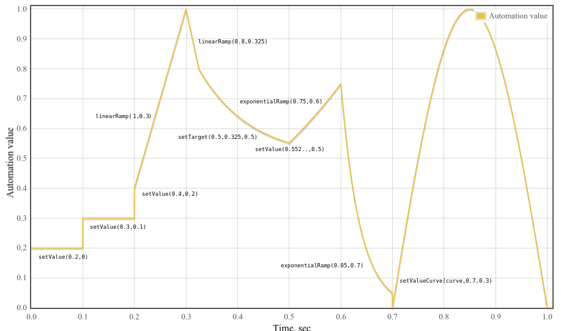

This specification describes a high-level JavaScript API for processing and
synthesizing audio in web applications. The primary paradigm is of an audio
routing graph, where a number of AudioNode objects are connected
together to define the overall audio rendering. The actual processing will
primarily take place in the underlying implementation (typically optimized
Assembly / C / C++ code), but direct
JavaScript processing and synthesis is also supported.
The introductory section covers the motivation
behind this specification.
This API is designed to be used in conjunction with other APIs and elements
on the web platform, notably: XMLHttpRequest [[XHR]]
(using the responseType and response attributes). For
games and interactive applications, it is anticipated to be used with the
canvas 2D [[2dcontext]] and WebGL [[WEBGL]] 3D graphics APIs.
Introduction
Audio on the web has been fairly primitive up to this point and until very
recently has had to be delivered through plugins such as Flash and QuickTime.
The introduction of the audio element in HTML5 is very important,
allowing for basic streaming audio playback. But, it is not powerful enough to
handle more complex audio applications. For sophisticated web-based games or
interactive applications, another solution is required. It is a goal of this
specification to include the capabilities found in modern game audio engines as
well as some of the mixing, processing, and filtering tasks that are found in
modern desktop audio production applications.
The APIs have been designed with a wide variety of use cases in mind. Ideally, it should
be able to support any use case which could reasonably be implemented
with an optimized C++ engine controlled via JavaScript and run in a browser.
That said, modern desktop audio software can have very advanced capabilities,
some of which would be difficult or impossible to build with this system.
Apple's Logic Audio is one such application which has support for external MIDI
controllers, arbitrary plugin audio effects and synthesizers, highly optimized
direct-to-disk audio file reading/writing, tightly integrated time-stretching,
and so on. Nevertheless, the proposed system will be quite capable of
supporting a large range of reasonably complex games and interactive
applications, including musical ones. And it can be a very good complement to
the more advanced graphics features offered by WebGL. The API has been designed
so that more advanced capabilities can be added at a later time.
Efficient biquad filters for lowpass, highpass, and other common filters.
A Waveshaping effect for distortion and other non-linear effects
Oscillators
Modular Routing
Modular routing allows arbitrary connections between different
AudioNode
objects. Each node can
have inputs and/or outputs. A source node has no inputs
and a single output. A destination node has
one input and no outputs, the most common example being AudioDestinationNode the final destination to the audio
hardware. Other nodes such as filters can be placed between the source and destination nodes.
The developer doesn't have to worry about low-level stream format details
when two objects are connected together; the right
thing just happens. For example, if a mono audio stream is connected to a
stereo input it should just mix to left and right channels appropriately.
In the simplest case, a single source can be routed directly to the output.
All routing occurs within an AudioContext containing a single
AudioDestinationNode:
A simple example of modular routing.
Illustrating this simple routing, here's a simple example playing a single
sound:
var context = new AudioContext();
function playSound() {
var source = context.createBufferSource();
source.buffer = dogBarkingBuffer;
source.connect(context.destination);
source.start(0);
}
Here's a more complex example with three sources and a convolution reverb
send with a dynamics compressor at the final output stage:
A more complex example of modular rounting.
var context = 0;
var compressor = 0;
var reverb = 0;
var source1 = 0;
var source2 = 0;
var source3 = 0;
var lowpassFilter = 0;
var waveShaper = 0;
var panner = 0;
var dry1 = 0;
var dry2 = 0;
var dry3 = 0;
var wet1 = 0;
var wet2 = 0;
var wet3 = 0;
var masterDry = 0;
var masterWet = 0;
function setupRoutingGraph () {
context = new AudioContext();
// Create the effects nodes.
lowpassFilter = context.createBiquadFilter();
waveShaper = context.createWaveShaper();
panner = context.createPanner();
compressor = context.createDynamicsCompressor();
reverb = context.createConvolver();
// Create master wet and dry.
masterDry = context.createGain();
masterWet = context.createGain();
// Connect final compressor to final destination.
compressor.connect(context.destination);
// Connect master dry and wet to compressor.
masterDry.connect(compressor);
masterWet.connect(compressor);
// Connect reverb to master wet.
reverb.connect(masterWet);
// Create a few sources.
source1 = context.createBufferSource();
source2 = context.createBufferSource();
source3 = context.createOscillator();
source1.buffer = manTalkingBuffer;
source2.buffer = footstepsBuffer;
source3.frequency.value = 440;
// Connect source1
dry1 = context.createGain();
wet1 = context.createGain();
source1.connect(lowpassFilter);
lowpassFilter.connect(dry1);
lowpassFilter.connect(wet1);
dry1.connect(masterDry);
wet1.connect(reverb);
// Connect source2
dry2 = context.createGain();
wet2 = context.createGain();
source2.connect(waveShaper);
waveShaper.connect(dry2);
waveShaper.connect(wet2);
dry2.connect(masterDry);
wet2.connect(reverb);
// Connect source3
dry3 = context.createGain();
wet3 = context.createGain();
source3.connect(panner);
panner.connect(dry3);
panner.connect(wet3);
dry3.connect(masterDry);
wet3.connect(reverb);
// Start the sources now.
source1.start(0);
source2.start(0);
source3.start(0);
}
API Overview
The interfaces defined are:
An AudioContext
interface, which contains an audio signal graph representing connections
betweens AudioNodes.
An AudioNode interface,
which represents audio sources, audio outputs, and intermediate processing
modules. AudioNodes can be dynamically connected together in a modular fashion. AudioNodes
exist in the context of an AudioContext
An AudioParam interface,
for controlling an individual aspect of an AudioNode's functioning, such as
volume.
An GainNode
interface, for explicit gain control. Because inputs to
AudioNodes support
multiple connections (as a unity-gain summing junction), mixers can be easily built with GainNodes.
A WaveShaperNode
interface, an AudioNode which applies a non-linear waveshaping effect for
distortion and other more subtle warming effects.
A OscillatorNode
interface, an audio source generating a periodic waveform.
The following conformance classes are defined by this specification:
conforming
implementation
A user agent is considered to be a conforming implementation if it
satisfies all of the MUST-, REQUIRED- and SHALL-level criteria in this specification that
apply to implementations.
User agents that use ECMAScript to implement the APIs defined in this
specification must implement them in a manner consistent with the ECMAScript
Bindings defined in the Web IDL specification [[!WEBIDL]] as this
specification uses that specification and terminology.
The Audio API
The AudioContext Interface
This interface represents a set of AudioNode objects and their
connections. It allows for arbitrary routing of signals to the
AudioDestinationNode
(what the user ultimately hears). Nodes are created from the context and are
then connected together. In most use
cases, only a single AudioContext is used per document.
suspended
The AudioContext is currently suspended (context time is not proceeding, audio hardware may be powered down/released).
running
Audio is being processed.
closed
The AudioContext has been released, and can no longer be used to process audio. All system audio resources have been released. Attempts to create new Nodes on the AudioContext will throw InvalidStateError. (AudioBuffers may still be created, through createBuffer or decodeAudioData.)
An AudioDestinationNode
with a single input representing the final destination for all audio.
Usually this will represent the actual audio hardware.
All AudioNodes actively rendering
audio will directly or indirectly connect to destination.
readonly attribute float sampleRate
The sample rate (in sample-frames per second) at which the
AudioContext handles audio. It is assumed that all AudioNodes in the
context run at this rate. In making this assumption, sample-rate
converters or "varispeed" processors are not supported in real-time
processing.
readonly attribute double currentTime
This is a time in seconds which starts at zero when the context is
created and increases in real-time. All scheduled times are relative to
it. This is not a "transport" time which can be started, paused, and
re-positioned. It is always moving forward. A GarageBand-like timeline
transport system can be very easily built on top of this (in JavaScript).
This time corresponds to an ever-increasing hardware timestamp.
Describes the current state of the AudioContext. The context state MUST begin in "suspended", and transitions to "running" when system resources are acquired and audio has begun processing. For OfflineAudioContexts, the state will remain in "suspended" until startRendering() is called, at which point it will transition to "running", and then to "closed" once audio processing has completed and oncomplete has been fired.
When the state is "suspended", a call to resume() will cause a transition to "running", or a call to close() will cause a transition to "closed".
When the state is "running", a call to suspend() will cause a transition to "suspended", or a call to close() will cause a transition to "closed".
When the state is "closed", no further state transitions are possible.
Promise suspend()
Suspends the progression of time in the audio context, allows any current context processing blocks that are already processed to be played to the destination, and then allows the system to release its claim on audio hardware. This is generally useful when the application knows it will not need the AudioContext for some time, and wishes to let the audio hardware power down. The promise resolves when the frame buffer is empty (has been handed off to the hardware), or immediately (with no other effect) if the context is already suspended. The promise is rejected if the context has been closed. This method will cause an INVALID_STATE_ERR exception to be thrown if called on an OfflineAudioContext.
While the system is suspended, MediaStreams will have their output ignored; that is, data will be lost by the real time nature of media streams. HTMLMediaElements will similarly have their output ignored until the system is resumed. Audio Workers and ScriptProcessorNodes will simply not fire their onaudioprocess events while suspended, but will resume when resumed. For the purpose of AnalyserNode window functions, the data is considered as a continuous stream - i.e. the resume()/suspend() does not cause silence to appear in the AnalyserNode's stream of data.
Promise resume()
Resumes the progression of time in an audio context that has been suspended, which may involve re-priming the frame buffer contents. The promise resolves when the system has re-acquired (if necessary) access to audio hardware and has begun streaming to the destination, or immediately (with no other effect) if the context is already running. The promise is rejected if the context has been closed. If the context is not currently suspended, the promise will resolve. This method will cause an INVALID_STATE_ERR exception to be thrown if called on an OfflineAudioContext.
Promise close()
Closes the audio context, releasing any system audio resources used by the AudioContext. This will not automatically release all AudioContext-created objects, unless other references have been released as well; however, it will forcibly release any system audio resources that might prevent additional AudioContexts from being created and used, suspend the progression of audio time in the audio context, and stop processing audio data. The promise resolves when all AudioContext-creation-blocking resources have been released. This method will cause an INVALID_STATE_ERR exception to be thrown if called on an OfflineAudioContext.
attribute EventHandler onstatechange
A property used to set the EventHandler for an event that is dispatched to
AudioContext when the state of the AudioContext has changed (i.e. when the
corresponding promise would have resolved). An event of type Event will be
dispatched to the event handler, which can query the AudioContext's state directly. A
newly-created AudioContext will always begin in the "paused" state, and a state change event will be fired
when it transitions to "running".
AudioBuffer createBuffer()
Creates an AudioBuffer of the given size. The audio data in the buffer will
be zero-initialized (silent). An NOT_SUPPORTED_ERR exception MUST be thrown
if any of the arguments is negative, zero, or outside its nominal range.
unsigned long numberOfChannels
Determines how many channels the buffer will have. An implementation
must support at least 32 channels.
unsigned long length
Determines the size of the buffer in sample-frames.
float sampleRate
Describes the sample-rate of the linear PCM audio data in the buffer in
sample-frames per second. An implementation must support sample-rates in
at least the range 22050 to 96000.
Promise<AudioBuffer> decodeAudioData()
Asynchronously decodes the audio file data contained in the ArrayBuffer.
The ArrayBuffer can, for example, be loaded from an XMLHttpRequest's
response attribute after setting the responseType
to "arraybuffer". Audio file data can be in any of the formats supported by
the audio element.
ArrayBuffer audioData
An ArrayBuffer containing compressed audio data
optional DecodeSuccessCallback successCallback
A callback function which will be invoked when the decoding is finished.
The single argument to this callback is an AudioBuffer representing the
decoded PCM audio data.
optional DecodeErrorCallback errorCallback
A callback function which will be invoked if there is an error
decoding the audio file.
Although the primary method of interfacing with this function is via its promise return value, the callback
parameters are provided for legacy reasons.
Let error be a DOMException whose name is NotSupportedError.
Reject promise with error.
If errorCallback is not missing, invoke errorCallback with error.
Terminate this algorithm.
Neuter the audioData ArrayBuffer in such a way that JavaScript code may not
access or modify the data anymore.
Queue a decoding operation to be performed on another thread.
Return promise.
In the decoding thread:
Attempt to decode the encoded audioData into linear PCM.
If a decoding error is encountered due to the audio format not being recognized or supported, or because
of corrupted/unexpected/inconsistent data, then, on the main thread's event loop:
Let error be a DOMException whose name is "EncodingError".
Reject promise with error.
If errorCallback is not missing, invoke errorCallback with error.
Otherwise:
Take the result, representing the decoded linear PCM audio data, and resample it to the sample-rate of
the AudioContext if it is different from the sample-rate of audioData.
On the main thread's event loop:
Let buffer be an AudioBuffer containing the final result (after possibly
sample-rate converting).
Resolve promise with buffer.
If successCallback is not missing, invoke successCallback with buffer.
Creates a MediaElementAudioSourceNode
given an HTMLMediaElement. As a consequence of calling this method, audio
playback from the HTMLMediaElement will be re-routed into the processing graph
of the AudioContext.
This method is DEPRECATED, as it is intended to be replaced by createAudioWorker.
Creates a ScriptProcessorNode for direct audio processing using
JavaScript. An INDEX_SIZE_ERR exception MUST be thrown if
bufferSize or numberOfInputChannels or
numberOfOutputChannels are outside the valid range.
optional unsigned long bufferSize = 0
The bufferSize parameter determines the buffer size in units of
sample-frames. If it's not passed in, or if the value is 0, then the
implementation will choose the best buffer size for the given
environment, which will be constant power of 2 throughout the lifetime
of the node. Otherwise if the author explicitly specifies the
bufferSize, it must be one of the following values: 256, 512, 1024,
2048, 4096, 8192, 16384. This value controls how frequently the
audioprocess event is
dispatched and how many sample-frames need to be processed each call.
Lower values for bufferSize
will result in a lower (better) latency. Higher
values will be necessary to avoid audio breakup and
glitches.
It is recommended for authors to not specify this buffer size and
allow the implementation to pick a good buffer size to balance between
latency and audio quality.
optional unsigned long numberOfInputChannels = 2
This parameter determines the number of channels for this node's
input. Values of up to 32 must be supported.
optional unsigned long numberOfOutputChannels = 2
This parameter determines the number of channels for this node's
output. Values of up to 32 must be supported.
Creates a DelayNode representing a variable delay line. The
initial default delay time will be 0 seconds.
optional double maxDelayTime = 1.0
The maxDelayTime parameter is optional and specifies the
maximum delay time in seconds allowed for the delay line. If
specified, this value MUST be greater than zero and less than three
minutes or a NOT_SUPPORTED_ERR exception MUST be thrown.
BiquadFilterNode createBiquadFilter()
Creates a BiquadFilterNode
representing a second order filter which can be configured as one of
several common filter types.
WaveShaperNode createWaveShaper()
Creates a WaveShaperNode representing a non-linear distortion.
Creates a PeriodicWave representing a waveform
containing arbitrary harmonic content. The real and
imag parameters must be of type Float32Array
(described in [[!TYPED-ARRAYS]]) of equal lengths greater than zero and less
than or equal to 4096 or an INDEX_SIZE_ERR exception MUST be thrown. These
parameters specify the Fourier coefficients of a
Fourier series
representing the partials of a periodic waveform. The created
PeriodicWave will be used with an
OscillatorNode and will represent a normalized
time-domain waveform having maximum absolute peak value of 1. Another way of
saying this is that the generated waveform of an
OscillatorNode will have maximum peak value at 0dBFS.
Conveniently, this corresponds to the full-range of the signal values used by
the Web Audio API. Because the PeriodicWave will be normalized on creation,
the real and imag parameters represent
relative values.
As PeriodicWave objects maintain their own representation, any
modification of the arrays uses as the real and
imag parameters after the call to
createPeriodicWave() will have no effect on the
PeriodicWave object.
Float32Array real
The real parameter represents an array of
cosine terms (traditionally the A terms). In audio
terminology, the first element (index 0) is the DC-offset of the periodic
waveform and is usually set to zero. The second element (index 1)
represents the fundamental frequency. The third element represents the
first overtone, and so on.
Float32Array imag
The imag parameter represents an array of
sine terms (traditionally the B terms). The first element
(index 0) should be set to zero (and will be ignored) since this term does
not exist in the Fourier series. The second element (index 1) represents
the fundamental frequency. The third element represents the first
overtone, and so on.
AudioBuffer decodedData
The AudioBuffer containing the decoded audio data.
DOMException error
The error that occurred while decoding.
Lifetime
Once created, an AudioContext will continue to play sound until it has no more sound to play, or
the page goes away.
Lack of introspection or serialization primitives
The Web Audio API takes a fire-and-forget approach to audio source
scheduling. That is, source nodes are created for each note during the
lifetime of the AudioContext, and never explicitely removed from the
graph. This is incompatible with a serialization API, since there is no stable
set of nodes that could be serialized.
Moreover, having an introspection API would allow content script to be able to
observe garbage collections.
The OfflineAudioContext Interface
OfflineAudioContext is a particular type of AudioContext for rendering/mixing-down
(potentially) faster than real-time. It does not render to the audio hardware, but instead renders as quickly as
possible, fulfilling the returned promise with the rendered result as an AudioBuffer.
Each OfflineAudioContext instance has an associated
rendering started flag that is initially
false.
Promise<AudioBuffer> startRendering()
Given the current connections and scheduled changes, starts rendering audio.
Although the primary method of getting the rendered audio data is via its promise return value, the instance
will also fire an event named complete for legacy reasons.
The following steps must be performed:
If this instance's rendering started flag is
true, return a promise rejected with a DOMException whose name is
"InvalidStateError".
This is an Event object which is dispatched to OfflineAudioContext for legacy
reasons.
readonly attribute AudioBuffer renderedBuffer
An AudioBuffer containing the rendered audio data.
The AudioNode Interface
AudioNodes are the building blocks of an AudioContext. This interface
represents audio sources, the audio destination, and intermediate processing
modules. These modules can be connected together to form processing graphs for rendering audio to the
audio hardware. Each node can have inputs and/or outputs.
A source node has no inputs
and a single output. An AudioDestinationNode has
one input and no outputs and represents the final destination to the audio
hardware. Most processing nodes such as filters will have one input and one
output. Each type of AudioNode differs in the details of how it processes or synthesizes audio. But, in general, an AudioNode
will process its inputs (if it has any), and generate audio for its outputs (if it has any).
Each output has one or more channels. The exact number of
channels depends on the details of the specific AudioNode.
An output may connect to one or more AudioNode
inputs, thus fan-out is supported. An input initially has no connections,
but may be connected from one
or more AudioNode outputs, thus fan-in is supported. When the connect() method is called to connect
an output of an AudioNode to an input of an
AudioNode, we call that a connection to the input.
Each AudioNode input has a specific number of
channels at any given time. This number can change depending on the connection(s)
made to the input. If the input has no connections then it has one channel which is silent.
For each input, an AudioNode performs a mixing
(usually an up-mixing) of all connections to that input.
Please see for more informative details,
and the
section for normative requirements.
For performance reasons, practical implementations will need to use block
processing, with each AudioNode processing a fixed number
of sample-frames of size block-size. In order to get uniform behavior
across implementations, we will define this value explicitly.
block-size is defined to be 128 sample-frames which corresponds to
roughly 3ms at a sample-rate of 44.1KHz.
AudioNodes are EventTargets, as described in DOM
[[!DOM]]. This means that it is possible to dispatch events to
AudioNodes the same
way that other EventTargets accept events.
max
computedNumberOfChannels is computed as the maximum of the number of channels of all connections. In this mode channelCount is ignored
Up-mix by filling channels until they run out then zero out remaining
channels. down-mix by filling as many channels as possible, then dropping
remaining channels.
void connect()
AudioNode destination
The destination parameter is the
AudioNode to connect to.
optional unsigned long output = 0
The output parameter is an index describing which output of the
AudioNode from which to connect. If this paremeter is out-of-bound, an
INDEX_SIZE_ERR exception MUST be thrown.
It is possible to connect an AudioNode output to more than one input
with multiple calls to connect(). Thus, "fan-out" is supported.
optional unsigned long input = 0
The input parameter is an index describing which input of
the destination AudioNode to connect to. If this
parameter is out-of ound, an INDEX_SIZE_ERR exception MUST be thrown.
It is possible to connect an AudioNode to another
AudioNode which creates a cycle: an
AudioNode may connect to another
AudioNode, which in turn connects back to the first
AudioNode. This is allowed only if there is at
least one DelayNode in the cycle or a
NOT_SUPPORTED_ERR exception MUST be thrown.
There can only be one connection between a given output of one specific
node and a given input of another specific node. Multiple connections
with the same termini are ignored. For example:
nodeA.connect(nodeB);
nodeA.connect(nodeB);
will have the same effect as
nodeA.connect(nodeB);
void connect()
Connects the AudioNode to an AudioParam, controlling the parameter
value with an audio-rate signal.
AudioParam destination
The destination parameter is the AudioParam to connect to.
optional unsigned long output = 0
The output parameter is an index describing which output of the
AudioNode from which to connect. If the parameter is
out-of-bound, an INDEX_SIZE_ERR exception MUST be thrown.
It is possible to connect an AudioNode output to more than one
AudioParam with multiple calls to connect(). Thus, "fan-out" is supported.
It is possible to connect more than one AudioNode output to a
single AudioParam with multiple calls to connect(). Thus, "fan-in" is
supported.
An AudioParam will take the rendered audio data from
any AudioNode output connected to it and convert it to
mono by down-mixing if it is not already mono, then mix it together
with other such outputs and finally will mix with the intrinsic
parameter value (the value the AudioParam would normally have
without any audio connections), including any timeline changes scheduled
for the parameter.
There can only be one connection between a given output of one
specific node and a specific AudioParam. Multiple connections with the
same termini are ignored. For example:
nodeA.connect(param);
nodeA.connect(param);
will have the same effect as
nodeA.connect(param);
void disconnect()
optional unsigned long output = 0
This parameter is an index describing which output of the
AudioNode to disconnect. If this parameter is
out-of-bounds, an INDEX_SIZE_ERR exception MUST be thrown.
The number of channels used when up-mixing and down-mixing connections
to any inputs to the node. The default value is 2 except for specific
nodes where its value is specially determined. This attribute has no
effect for nodes with no inputs. If this value is set to zero, the
implementation MUST throw a NOT_SUPPORTED_ERR exception.
See the
section for more information on this attribute.
attribute ChannelCountMode channelCountMode
Determines how channels will be counted when up-mixing and down-mixing
connections to any inputs to the node . This attribute has no effect
for nodes with no inputs.
See the section
for more information on this attribute.
Determines how individual channels will be treated when up-mixing and
down-mixing connections to any inputs to the node. This attribute has
no effect for nodes with no inputs.
See the section
for more information on this attribute.
Lifetime
An implementation may choose any method to avoid unnecessary resource usage
and unbounded memory growth of unused/finished nodes. The following is a
description to help guide the general expectation of how node lifetime would
be managed.
An AudioNode will live as long as there are any references to it.
There are several types of references:
A normal JavaScript reference obeying normal garbage collection rules.
A playing reference for both AudioBufferSourceNodes and OscillatorNodes.
These nodes maintain a playing
reference to themselves while they are currently playing.
A connection reference which occurs if another AudioNode is connected to it.
A tail-time reference which an AudioNode maintains on itself as long as it has
any internal processing state which has not yet been emitted. For example, a ConvolverNode has
a tail which continues to play even after receiving silent input (think about clapping your hands in a large concert
hall and continuing to hear the sound reverberate throughout the hall). Some AudioNodes have this
property. Please see details for specific nodes.
When an AudioNode has no references it will be deleted. Before it is deleted, it will disconnect itself
from any other AudioNodes which it is connected to. In this way it releases all connection references (3) it has to other nodes.
Regardless of any of the above references, it can be assumed that the AudioNode will be deleted when its AudioContext is deleted.
The AudioDestinationNode Interface
This is an AudioNode representing the final audio destination and is
what the user will ultimately hear. It can often be considered as an audio
output device which is connected to speakers. All rendered audio to be heard
will be routed to this node, a "terminal" node in the AudioContext's routing
graph. There is only a single AudioDestinationNode per AudioContext, provided
through the destination attribute of AudioContext.
The maximum number of channels that the
channelCount attribute
can be set to. An AudioDestinationNode representing the audio
hardware end-point (the normal case) can potentially output more than 2
channels of audio if the audio hardware is multi-channel.
maxChannelCount is the maximum number of channels that this
hardware is capable of supporting. If this value is 0, then this indicates
that channelCount may not be
changed. This will be the case for an AudioDestinationNode in an
OfflineAudioContext and also for basic implementations with hardware
support for stereo output only.
channelCount defaults to 2 for
a destination in a normal AudioContext, and may be set to any
non-zero value less than or equal to maxChannelCount. An
INDEX_SIZE_ERR exception MUST be thrown if this value is not within
the valid range. Giving a concrete example, if the audio hardware
supports 8-channel output, then we may set channelCount to 8, and render
8-channels of output.
AudioParam controls an individual aspect of an AudioNode's functioning,
such as volume. The parameter can be set immediately to a particular value
using the value attribute. Or, value changes can be scheduled to
happen at very precise times (in the coordinate system of
AudioContext's currentTime
attribute), for envelopes, volume fades, LFOs, filter sweeps,
grain windows, etc. In this way, arbitrary timeline-based automation curves
can be set on any AudioParam. Additionally, audio signals from the outputs of
AudioNodes can be connected to an AudioParam, summing with the
intrinsic parameter value.
Some synthesis and processing AudioNodes have
AudioParams as attributes whose values must be taken into account
on a per-audio-sample basis. For other AudioParams,
sample-accuracy is not important and the value changes can be sampled more
coarsely. Each individual AudioParam will specify that it is
either an a-rate parameter which means that its values must be taken
into account on a per-audio-sample basis, or it is a k-rate
parameter.
Implementations must use block processing, with each AudioNode
processing 128 sample-frames in each block.
For each 128 sample-frame block, the value of a k-rate parameter must
be sampled at the time of the very first sample-frame, and that value must be
used for the entire block. a-rate parameters must be sampled for
each sample-frame of the block.
An AudioParam maintains a time-ordered event list which is
initially empty. The times are in the time coordinate system of
the AudioContext's currentTime attribute. The events define a mapping from time to value.
The following methods can change the event list by adding a new event into the
list of a type specific to the method. Each event has a time associated with
it, and the events will always be kept in time-order in the list. These
methods will be called automation methods:
The following rules will apply when calling these methods:
If one of these events is added at a time where there is already an event
of the exact same type, then the new event will replace the old one.
If one of these events is added at a time where there is already one or more
events of a different type, then it will be placed in the list after them, but
before events whose times are after the event.
If setValueCurveAtTime() is called for time T and duration D and there are any
events having a time greater than T, but less than T + D, then a
NOT_SUPPORTED_ERR exception MUST be thrown. In other words, it's not ok to
schedule a value curve during a time period containing other events.
Similarly a NOT_SUPPORTED_ERR exception MUST be thrown if any
automation method is called at a time which is inside of the time
interval of a SetValueCurve event at time T and duration D.
attribute float value
The parameter's floating-point value. This attribute is initialized to
the defaultValue. If value is set during a time
when there are any automation events scheduled then it will be ignored and
no exception will be thrown.
Schedules a parameter value change at the given time.
The value parameter is the value the parameter
will change to at the given time.
The startTime parameter is the time
in the same time coordinate system as the AudioContext's currentTime attribute. An INVALID_ACCESS_ERR exception MUST be
thrown if startTime is negative or is not a finite number.
If there are no more events after this SetValue event, then for t
>= startTime, v(t) = value. In other words, the value
will remain constant.
If the next event (having time T1) after this SetValue event is
not of type LinearRampToValue or ExponentialRampToValue,
then, for t:
startTime <= t < T1, v(t) = value
In other words, the value will remain constant during this time interval,
allowing the creation of "step" functions.
If the next event after this SetValue event is of type
LinearRampToValue or ExponentialRampToValue then please
see details below.
Schedules a linear continuous change in parameter value from the previous
scheduled parameter value to the given value.
The value parameter is the value the parameter will linearly ramp
to at the given time.
The endTime parameter is the time in the same time coordinate
system as the AudioContext's currentTime attribute. An
INVALID_ACCESS_ERR exception MUST be thrown if endTime is
negative or is not a finite number.
The value during the time interval T0 <= t < T1 (where T0 is the time
of the previous event and T1 is the endTime parameter passed
into this method) will be calculated as:
v(t) = V0 + (V1 - V0) * ((t - T0) / (T1 - T0))
Where V0 is the value at the time T0 and V1 is the value parameter passed
into this method.
If there are no more events after this LinearRampToValue event then for t
>= T1, v(t) = V1.
Schedules an exponential continuous change in parameter value from
the previous scheduled parameter value to the given value. Parameters
representing filter frequencies and playback rate are best changed
exponentially because of the way humans perceive sound.
The value parameter is the value the parameter
will exponentially ramp to at the given time. A NOT_SUPPORTED_ERR exception
MUST be thrown if this value is less than or equal to 0, or if the value at
the time of the previous event is less than or equal to 0.
The endTime parameter is the time in the same
time coordinate system as the AudioContext's currentTime attribute. An
INVALID_ACCESS_ERR exception MUST be thrown if endTime is
negative or is not a finite number.
The value during the time interval T0 <= t < T1 (where T0 is the time
of the previous event and T1 is the endTime parameter passed into this
method) will be calculated as:
v(t) = V0 * (V1 / V0) ^ ((t - T0) / (T1 - T0))
Where V0 is the value at the time T0 and V1 is the value parameter passed into
this method.
If there are no more events after this ExponentialRampToValue event then for t
>= T1, v(t) = V1
Start exponentially approaching the target value at the given time
with a rate having the given time constant. Among other uses, this is
useful for implementing the "decay" and "release" portions of an ADSR
envelope. Please note that the parameter value does not immediately
change to the target value at the given time, but instead gradually
changes to the target value.
The target parameter is the value
the parameter will start changing to at the given time.
The startTime parameter is the time in the
same time coordinate system as the AudioContext's currentTime attribute. An INVALID_ACCESS_ERR exception MUST be
thrown if start is negative or is not a finite number.
The timeConstant parameter is the
time-constant value of first-order filter (exponential) approach to the
target value. The larger this value is, the slower the transition will
be.
More precisely, timeConstant is the time it takes a first-order
linear continuous time-invariant system to reach the value 1 - 1/e (around
63.2%) given a step input response (transition from 0 to 1 value).
During the time interval: T0 <= t < T1, where T0
is the startTime parameter and T1 represents the time of the
event following this event (or infinity if there are no following
events):
Sets an array of arbitrary parameter values starting at the given
time for the given duration. The number of values will be scaled to fit
into the desired duration.
The values parameter is a Float32Array
representing a parameter value curve. These values will apply starting at
the given time and lasting for the given duration. Any modification to the
the array used as values argument
after the call won't have any effect on the AudioParam.
The startTime parameter is the time in the same time
coordinate system as the AudioContext's currentTime attribute. An
INVALID_ACCESS_ERR exception MUST be thrown if startTime is
negative or is not a finite number.
The duration parameter is the amount of
time in seconds (after the time parameter) where values will be
calculated according to the values parameter.
During the time interval: startTime <= t <
startTime + duration, values will be calculated:
v(t) = values[N * (t - startTime) / duration]
where N is the length of the values array.
After the end of the curve time interval (t >= startTime +
duration), the value will remain constant at the final curve
value, until there is another automation event (if any).
void cancelScheduledValues(double startTime)
Cancels all scheduled parameter changes with times greater than or
equal to startTime.
The startTime parameter is the starting time at and after
which any previously scheduled parameter changes will be cancelled. It
is a time in the same time coordinate system as
the AudioContext's
currentTime attribute.
An INVALID_ACCESS_ERR exception MUST be thrown if startTime
is negative or is not a finite number.
Computation of Value
computedValue is the final value controlling the audio DSP and is computed by the audio rendering thread during each rendering time quantum.
It must be internally computed as follows:
An intrinsic parameter value will be calculated at each time, which is either the value set directly to the value attribute,
or, if there are any scheduled parameter changes (automation events) with times before or at this time,
the value as calculated from these events. If the value attribute
is set after any automation events have been scheduled, then these events will be removed. When read, the value attribute
always returns the intrinsic value for the current time. If automation events are removed from a given time range, then the
intrinsic value will remain unchanged and stay at its previous value until either the value attribute is directly set, or automation events are added
for the time range.
An AudioParam will take the rendered audio data from any AudioNode output connected to it and convert it to mono by down-mixing if it is not
already mono, then mix it together with other such outputs. If there are no AudioNodes connected to it, then this value is 0, having no
effect on the computedValue.
The computedValue is the sum of the intrinsic value and the value calculated from (2).
AudioParam Automation Example

An example of parameter automation.
var t0 = 0;
var t1 = 0.1;
var t2 = 0.2;
var t3 = 0.3;
var t4 = 0.4;
var t5 = 0.6;
var t6 = 0.7;
var t7 = 1.0;
var curveLength = 44100;
var curve = new Float32Array(curveLength);
for (var i = 0; i < curveLength; ++i)
curve[i] = Math.sin(Math.PI * i / curveLength);
param.setValueAtTime(0.2, t0);
param.setValueAtTime(0.3, t1);
param.setValueAtTime(0.4, t2);
param.linearRampToValueAtTime(1, t3);
param.linearRampToValueAtTime(0.15, t4);
param.exponentialRampToValueAtTime(0.75, t5);
param.exponentialRampToValueAtTime(0.05, t6);
param.setValueCurveAtTime(curve, t6, t7 - t6);
The GainNode Interface
Changing the gain of an audio signal is a fundamental operation in audio
applications. The GainNode is one of the building blocks for
creating mixers. This interface is an
AudioNode with a single input and single output:
The implementation must make gain changes to the audio stream smoothly,
without introducing noticeable clicks or glitches. This process is called
"de-zippering".
readonly attribute AudioParam gain
Represents the amount of gain to apply. Its default value is 1
(no gain change). The nominal minValue is 0, but may be set
negative for phase inversion. The nominal maxValue is 1, but
higher values are allowed (no
exception thrown).This parameter is a-rate
The DelayNode Interface
A delay-line is a fundamental building block in audio applications. This
interface is an AudioNode with a single input and single output:
The number of channels of the output always equals the number of channels of the
input.
It delays the incoming audio signal by a certain amount. Specifically, at each
time t, input signal input(t), delay time
delayTime(t) and output signal output(t), the output will be
output(t) = input(t - delayTime(t)). The default
delayTime is 0 seconds (no delay). When the delay time is
changed, the implementation must make the transition smoothly, without
introducing noticeable clicks or glitches to the audio stream.
readonly attribute AudioParam delayTime
An AudioParam object representing the amount of delay
(in seconds) to apply. Its default value is 0 (no delay). The
minimum value is 0 and the maximum value is determined by the
maxDelayTime argument to the AudioContext method
createDelay.
If DelayNode is part of a cycle, then the value
of the delayTime attribute is clamped to a minimum of
128 frames (one block).
This interface represents a memory-resident audio asset (for one-shot sounds
and other short audio clips). Its format is non-interleaved IEEE 32-bit linear
PCM with a nominal range of -1 -> +1. It can contain one or more channels.
Typically, it would be expected that the length of the PCM data would be
fairly short (usually somewhat less than a minute). For longer sounds, such
as music soundtracks, streaming should be used with the audio
element and MediaElementAudioSourceNode.
The sample-rate for the PCM audio data in samples per second.
readonly attribute long length
Length of the PCM audio data in sample-frames.
readonly attribute double duration
Duration of the PCM audio data in seconds.
readonly attribute long numberOfChannels
The number of discrete audio channels.
Float32Array getChannelData()
Returns the Float32Array representing the PCM audio data for
the specific channel.
unsigned long channel
This parameter is an index representing the particular channel to get data
for. An index value of 0 represents the first channel. This index value
MUST be less than numberOfChannels or an INDEX_SIZE_ERR
exception MUST be thrown.
void copyFromChannel()
The copyFromChannel method copies the samples from the
specified channel of the AudioBuffer to the
destination array.
Float32Array destination
The array the channel data will be copied to.
long channelNumber
The index of the channel to copy the data from. If
channelNumber is greater or equal than the number of
channel of the AudioBuffer, an INDEX_SIZE_ERR MUST
be thrown.
optional unsigned long startInChannel = 0
An optional offset to copy the data from. If
startInChannel is greater than the length of the
AudioBuffer, an INDEX_SIZE_ERR MUST be thrown.
void copyToChannel()
The copyToChannel method copies the samples to the
specified channel of the AudioBuffer, from the
source array.
Float32Array source
The array the channel data will be copied from.
long channelNumber
The index of the channel to copy the data to. If
channelNumber is greater or equal than the number of
channel of the AudioBuffer, an INDEX_SIZE_ERR MUST
be thrown.
optional unsigned long startInChannel = 0
An optional offset to copy the data to. If
startInChannel is greater than the length
of the AudioBuffer, an INDEX_SIZE_ERR MUST be
thrown.
The methods copyToChannel and copyFromChannel can be
used to fill part of an array by passing in a Float32Array that's
a view onto the larger array.
When reading data from an AudioBuffer's channels, and the data can be
processed in chunks, copyFromChannel should be preferred to
calling getChannelData and accessing the resulting array, because
it may avoid unnecessary memory allocation and copying.
An internal operation acquire the contents of
an AudioBuffer is invoked when the contents of an
AudioBuffer are needed by some API implementation. This operation
returns immutable channel data to the
invoker.
When an acquire the content operation occurs on an
AudioBuffer, run the following steps:
If any of the AudioBuffer's ArrayBuffer have
been neutered, abort these steps, and return a zero-length channel data
buffers to the invoker.
Neuter all ArrayBuffers for arrays previously returned by
getChannelData on this AudioBuffer.
Retain the underlying data buffers from those ArrayBuffers
and return references to them to the invoker.
Attach ArrayBuffers containing copies of the data to the
AudioBuffer, to be returned by the next call to
getChannelData.
This interface represents an audio source from an in-memory audio asset in an
AudioBuffer. It is useful for playing short audio assets which
require a high degree of scheduling flexibility (can playback in rhythmically
perfect ways). The start() method is used to schedule when sound playback will
happen. The playback will stop automatically when the buffer's audio data has
been completely played (if the loop attribute is false), or when
the stop() method has been called and the specified time has been reached.
Please see more details in the start() and stop() description. start() and
stop() may not be issued multiple times for a given AudioBufferSourceNode.
numberOfInputs : 0
numberOfOutputs : 1
The number of channels of the output always equals the number of channels of
the AudioBuffer assigned to the .buffer attribute, or is one channel of
silence if .buffer is NULL.
attribute AudioBuffer? buffer
Represents the audio asset to be played.
readonly attribute AudioParam playbackRate
The speed at which to render the audio stream. Its default
value is 1. This parameter is k-rate.
readonly attribute AudioParam detune
An aditional parameter to modulate the speed at which is rendered the audio
stream. Its default value is 0. Its nominal range is [-1200; 1200]. This
parameter is k-rate.
attribute boolean loop
Indicates if the audio data should play in a loop. The default value is
false.
attribute double loopStart
An optional value in seconds where looping should begin if the
loop attribute is true. Its default value is 0,
and it may usefully be set to any value between 0 and the duration of the
buffer.
attribute double loopEnd
An optional value in seconds where looping should end if the
loop attribute is true. Its default value is 0,
and it may usefully be set to any value between 0 and the duration of the
buffer.
void start()
Schedules a sound to playback at an exact time.
optional double when = 0
The when parameter describes at what time (in seconds) the sound
should start playing. It is in the same time coordinate system as
the AudioContext's currentTime attribute. If 0 is passed in for this value or if the
value is less than currentTime, then the sound will start playing
immediately. start may only be called one time and must be
called before stop is called or an INVALID_STATE_ERR
exception MUST be thrown. An INVALID_ACCESS_ERR exception MUST be
thrown if when is negative or is not a finite number.
optional double offset = 0
The offset parameter describes the offset
time in the buffer (in seconds) where playback will begin. If 0 is
passed in for this value, then playback will start from the beginning of
the buffer. An INVALID_ACCESS_ERR exception MUST be thrown if
offset is negative or is not a finite number.
optional double duration
The duration parameter describes the
duration of the portion (in seconds) to be played. If this parameter is
not passed, the duration will be equal to the total duration of the
AudioBuffer minus the offset parameter. Thus if neither
offset nor duration are specified then the
implied duration is the total duration of the AudioBuffer. An
INVALID_ACCESS_ERR exception MUST be thrown if duration
is negative or is not a finite number.
void stop()
Schedules a sound to stop playback at an exact time.
optional double when = 0
The when parameter describes at what time (in seconds) the sound
should stop playing. It is in the same time coordinate system as
the AudioContext's
currentTime attribute. If 0
is passed in for this value or if the value
is less than currentTime, then the sound will stop playing
immediately. An INVALID_ACCESS_ERR exception MUST be thrown if
when is negative or is not a finite number. If stop
is called again after already have been
called, the last invocation will be the only one applied; stop times set by previous
calls will not be applied, unless the buffer has already stopped prior to any
subsequent calls. If the buffer has already stopped, further calls to
stop will have no effect. If a stop time is reached prior to the
scheduled start time, the sound will not play.
attribute EventHandler onended
A property used to set the EventHandler (described in
HTML[[!HTML]]) for the ended event that is dispatched to
AudioBufferSourceNode
node types. When the playback of the buffer for an
AudioBufferSourceNode is finished, an event of type Event
(described in HTML
[[!HTML]]) will be dispatched to the event handler.
Both playbackRate and detune are k-rate
parameters and are used together to determine a computedPlaybackRate
value:
If the loop attribute is true when start() is called, then playback will continue indefinitely
until stop() is called and the stop time is reached. We'll call this "loop" mode. Playback always starts at the point in the buffer indicated
by the offset argument of start(), and in loop mode will continue playing until it reaches the actualLoopEnd position
in the buffer (or the end of the buffer), at which point it will wrap back around to the actualLoopStart position in the buffer, and continue
playing according to this pattern.
In loop mode then the actual loop points are calculated as follows from the loopStart and loopEnd attributes:
Note that the default values for loopStart and loopEnd are both 0, which indicates that looping should occur from the very start
to the very end of the buffer.
Please note that as a low-level implementation detail, the AudioBuffer is at a
specific sample-rate (usually the same as the AudioContext
sample-rate), and that the loop times (in seconds) must be converted to the
appropriate sample-frame positions in the buffer according to this sample-rate.
When scheduling the beginning and the end of playback using the
start() and stop() methods, the resulting start or
stop time MUST be rounded to the nearest sample-frame in the sample rate of
the AudioContext. That is, no sub-sample scheduling is
possible.
The MediaElementAudioSourceNode Interface
This interface represents an audio source from an audio or
video element.
numberOfInputs : 0
numberOfOutputs : 1
The number of channels of the output corresponds to the number of channels of the media referenced by the HTMLMediaElement.
Thus, changes to the media element's .src attribute can change the number of channels output by this node.
If the .src attribute is not set, then the number of channels output will be one silent channel.
The number of channels of the single output equals the number of channels of
the audio referenced by the HTMLMediaElement passed in as the
argument to createMediaElementSource(), or is 1 if the
HTMLMediaElement has no audio.
The HTMLMediaElement must behave in an identical fashion
after the MediaElementAudioSourceNode has been created, except
that the rendered audio will no longer be heard directly, but instead will be
heard as a consequence of the MediaElementAudioSourceNode being
connected through the routing graph. Thus pausing, seeking, volume,
src attribute changes, and other aspects of the
HTMLMediaElement must behave as they normally would if
not used with a MediaElementAudioSourceNode.
var mediaElement = document.getElementById('mediaElementID');
var sourceNode = context.createMediaElementSource(mediaElement);
sourceNode.connect(filterNode);
Security with MediaElementAudioSourceNode and cross-origin resources
HTMLMediaElement allows the playback of cross-origin resources.
Because Web Audio can allows one to inspect the content of the resource
(e.g. using a MediaElementAudioSourceNode, and a
ScriptProcessorNode to read the samples), information leakage can
occur if scripts from one origin
inspect the content of a resource from another origin.
To prevent this, a MediaElementAudioSourceNode MUST output
silence instead of the normal output of the
HTMLMediaElement
if it has been created using an HTMLMediaElement for which the
execution of the fetch
algorithm labeled the resource as CORS-cross-origin.
The AudioWorker
AudioWorker is not an actual class in the Web Audio API; an Audio Worker is
represented in the main thread by the AudioWorkerNode methods
(postMessage, onmessage and terminate, in particular). From inside an audio
worker script, an Audio Worker is represented by an
AudioWorkerGlobalScope object representing the node's
contextual information; all worker scripts are run in the audio processing
thread.
The AudioWorkerNode Interface
This interface represents an AudioNode which interacts
with a Worker thread to generate, process, or analyse audio directly.
The user creates a separate audio processing worker script, which is hosted
inside the AudioWorkerGlobalScope and runs inside the audio processing
thread, rather than the main UI thread. The AudioWorkerNode represents the
processing node in the main processing thread's node graph; the
AudioWorkerGlobalScope represents the context in which the user's audio
processing script is run.
Nota bene that if the Web Audio implementation normally runs audio process
at higher than normal thread priority, utilizing AudioWorkerNodes may cause
demotion of the priority of the audio thread (since user scripts cannot be
run with higher than normal priority).
numberOfInputChannels and numberOfOutputChannels
determine the number of input and output channels (and the number of channels
present in the AudioBuffers passed to the AudioProcess event handler inside the
AudioWorkerGlobalScope). It is invalid for both
numberOfInputChannels and numberOfOutputChannels to
be zero.
var node = context.createAudioWorker( "bitcrusher.js", numberOfInputChannels, numberOfOutputChannels);
void terminate()
The terminate() method, when invoked, must cause the
"terminate
a worker" algorithm to be run on the worker with which the object
is associated. This will cease any AudioProcessEvents being
dispatched to the Audio Worker, and will cause the destruction of the
worker thread. In practical terms, this means the node will disconnect itself from any downstream connections.
Causes a correspondingly-named read-only AudioParam to be
present on the AudioWorkerNode, and a correspondingly-named
read-only Float32Array to be present on the
parameters object exposed on the
AudioProcessEvent on subsequent audio processing events. The
AudioParam may immediately have its scheduling methods called, its
.value set, or AudioNodes connected to it.
The name parameter is the name used for the read-only
AudioParam added to the AudioWorkerNode, and the name used for the
read-only Float32Array that will be present on the
parameters object exposed on subsequent
AudioProcessEvents.
The defaultValue parameter is the default value
for the AudioParam's value attribute, as well as
therefore the default value that will appear in the Float32Array in the
worker script (if no other parameter changes or connections affect the
value).
void removeParameter(DOMString name)
Removes a previously-added parameter named name from the
AudioWorkerNode. This will also remove the correspondingly-named
read-only AudioParam from the AudioWorkerNode, and will
remove the correspondingly-named read-only Float32Array from the
AudioProcessEvent's parameters member on
subsequent audio processing events. A
NOT_FOUND_ERR exception must be thrown if no parameter with that name
exists on this node.
The name parameter identifies the parameter to be
removed.
Note that AudioWorkerNode objects will also have read-only
AudioParam objects for each named parameter added via the
addParameter method. As this is dynamic, it cannot be captured
in IDL.
AudioWorkerNodes must implement the Worker
interface for communication with the audio worker script.
The AudioWorkerGlobalScope Interface
This interface is a DedicatedWorkerGlobalScope-derived
object representing the context in which an audio processing script is run;
it is designed to enable the generation, processing, and analysis of audio
data directly using JavaScript in a Worker thread.
The AudioWorkerGlobalScope has an
audioprocess event that is dispatched
synchronously to process audio frames.
audioprocess events are only
dispatched if the AudioWorkerNode has at least one input or
one output connected.
The sample rate of the host AudioContext (since inside the
Worker scope, the user will not have direct access to the
AudioContext.
Audio Worker Examples
A Bitcrusher Node
Bitcrushing is a mechanism by which the audio quality of an audio
stream is reduced - both by quantizing the value (simulating lower
bit-depth in integer-based audio), and by quantizing in time
(simulating a lower digital sample rate). This example shows how to
use AudioParams (in this case, treated as a-rate) inside an
AudioWorker.
Main file javascript
var bitcrusherNode = audioContext.createAudioWorker("bitcrusher_worker.js", 1, 1);
// Custom parameter - number of bits to crush down to - default 8
bitcrusherNode.addParameter( "bits", 8 );
// Custom parameter - frequency reduction, 0-1, default 0.5
bitcrusherNode.addParameter( "frequencyReduction", 0.5 );
bitcrusher_worker.js
var phaser = 0;
var lastDataValue = 0;
onaudioprocess= function (e) {
for (var channel=0; channel<e.inputBuffers.length; channel++) {
var inputBuffer = e.inputBuffers[channel];
var outputBuffer = e.outputBuffers[channel];
var bufferLength = inputBuffer.length;
var bitsArray = e.parameters.bits;
var frequencyReductionArray = e.parameters.frequencyReduction;
for (var i=0; i<bufferLength; i++) {
var bits = bitsArray ? bitsArray[i] : 8;
var frequencyReduction = frequencyReductionArray ? frequencyReductionArray[i] : 0.5;
var step = Math.pow(1/2, bits);
phaser += frequencyReduction;
if (phaser >= 1.0) {
phaser -= 1.0;
lastDataValue = step * Math.floor(inputBuffer[i] / step + 0.5);
}
outputBuffer[i] = lastDataValue;
}
}
};
A Volume Meter and Clip Detector
Another common need is a clip-detecting volume meter. This example
shows how to communicate basic parameters (that do not need AudioParam
scheduling) across to a Worker, as well as communicating data back to
the main thread.
Main file javascript
var vuNode = audioContext.createAudioWorker("vu_meter_worker.js", 1, 1);
// This handles communication back from the volume meter
vuNode.onmessage = function (event) {
if (event.data instanceof Object ) {
if (event.data.hasOwnProperty("clip")
this.clip = event.data.clip;
if (event.data.hasOwnProperty("volume")
this.volume = event.data.volume;
}
}
// Set up some configuration parameters
vuNode.postMessage(
{ "smoothing": 0.9, // Smoothing parameter
"clipLevel": 0.9, // Level to consider "clipping"
"clipLag": 750, // How long to keep "clipping" lit up after clip (ms)
"updating": 90 // How frequently to update volume and clip param (ms)
});
// Set up volume and clip attributes. These will be updated by our onmessage.
vuNode.volume = 0;
vuNode.clip = false;
vu_meter_worker.js
// how many samples between updates - default 100ms
this.timeToNextUpdate = 0.1 * this.sampleRate;
// This just handles setting attribute values
onmessage = function ( event ) {
if (event.data instanceof Object ) {
if (event.data.hasOwnProperty("smoothing")
this.smoothing = event.data.smoothing;
if (event.data.hasOwnProperty("clipLevel")
this.clipLevel = event.data.clipLevel;
if (event.data.hasOwnProperty("clipLag")
this.clipLag = event.data.clipLag / 1000; // convert to seconds
if (event.data.hasOwnProperty("updating") // convert to samples
this.updatingInterval = event.data.updating * this.sampleRate / 1000 ;
}
};
onaudioprocess = function ( event ) {
var buf = event.inputBuffers[0]; // For simplicity, this example is only mono
var bufLength = buf.length;
var sum = 0;
var x;
// Do a root-mean-square on the samples: sum up the squares...
for (var i=0; i<bufLength; i++) {
x = buf[i];
if (Math.abs(x)>=this.clipLevel) {
this.clipping = true;
this.unsentClip = true; // Make sure, for every clip, we send a message.
this.lastClip = event.playbackTime + (i/this.sampleRate);
}
sum += x * x;
}
// ... then take the square root of the sum.
var rms = Math.sqrt(sum / bufLength);
// Now smooth this out with the smoothing factor applied
// to the previous sample - take the max here because we
// want "fast attack, slow release."
this.volume = Math.max(rms, this.volume*this.smoothing);
if (this.clipping && (!this.unsentClip) && (event.playbackTime > (this.lastClip + clipLag)))
this.clipping = false;
// How long has it been since our last update?
this.timeToNextUpdate -= this.last
if (this.timeToNextUpdate<0) {
this.timeToNextUpdate = this.updatingInterval;
this.postMessage(
{ "volume": this.volume,
"clip": this.clipping });
this.unsentClip = false;
}
};
The ScriptProcessorNode Interface - DEPRECATED
This interface is an AudioNode which can generate, process, or analyse audio
directly using JavaScript. This node type is deprecated, to be replaced by the AudioWorkerNode; this text is only here for informative purposes until implementations remove this node type.
The ScriptProcessorNode is constructed with a bufferSize which must
be one of the following values: 256, 512, 1024, 2048, 4096, 8192, 16384. This
value controls how frequently the audioprocess
event is dispatched and how many sample-frames need to be processed each
call. audioprocess events are
only dispatched if the ScriptProcessorNode has at least one
input or one output connected. Lower numbers for bufferSize will result in a
lower (better) latency. Higher numbers will be necessary
to avoid audio breakup and glitches. This value
will be picked by the implementation if the bufferSize argument to
createScriptProcessor is not passed in, or is set to 0.
numberOfInputChannels and numberOfOutputChannels
determine the number of input and output channels. It is invalid for both
numberOfInputChannels and numberOfOutputChannels to
be zero.
var node = context.createScriptProcessor(bufferSize, numberOfInputChannels, numberOfOutputChannels);
attribute EventHandler onaudioprocess
A property used to set the EventHandler (described in
HTML[[!HTML]]) for the audioprocess event that is
dispatched to ScriptProcessorNode node types. An event of
type AudioProcessingEvent will be dispatched to the event
handler.
readonly attribute long bufferSize
The size of the buffer (in sample-frames) which needs to be processed each
time onaudioprocess is called. Legal values are (256, 512,
1024, 2048, 4096, 8192, 16384).
The AudioProcessEvent Interface
This is an Event object which is dispatched to
AudioWorkerGlobalScope objects to perform processing.
The event handler processes audio from the input (if any) by accessing the
audio data from the inputBuffers attribute. The audio data which
is the result of the processing (or the synthesized data if there are no
inputs) is then placed into the outputBuffers.
readonly attribute double playbackTime
The time when the audio will be played in the same time coordinate system
as the AudioContext's currentTime.
playbackTime allows for very
tight synchronization between processing directly in JavaScript with the
other events in the context's rendering graph.
readonly attribute Float32Array[] inputBuffers
An Array of Float32Arrays, one per channel, containing the input audio
buffer with input data. The number of channels will be equal to the
numberOfInputChannels parameter of the createAudioWorker()
method. It is expected that the event object, the Array and the input
and output buffers may be reused by the processing system, in order to
minimize memory churn; it is not recommended to maintain global handles
to them.
readonly attribute Float32Array[] outputBuffers
An Array of Float32Arrays, one per channel, containing the output audio
buffer. The number of channels will be equal to the
numberOfOutputChannels parameter of the createAudioWorker()
method. It is expected that the event object, the Array and the input
and output buffers may be reused by the processing system, in order to
minimize memory churn; it is not recommended to maintain global handles
to them.
readonly attribute object parameters
This object attribute exposes a correspondingly-named
read-only Float32Array for each parameter that has been added
via addParameter. As this is dynamic, this cannot be captured
in IDL. The length of this Float32Array will correspond to the length
of the inputBuffer. The contents of this Float32Array will be the
values to be used for the AudioParam at the corresponding points in
time. It is expected that this Float32Array will be reused by the
audio engine.
The AudioProcessingEvent Interface - DEPRECATED
This is an Event object which is dispatched to
ScriptProcessorNode nodes. It will be removed
when the ScriptProcessorNode is removed, as the replacement
AudioWorker uses the AudioProcessEvent.
The event handler processes audio from the input (if any) by accessing the
audio data from the inputBuffer attribute. The audio data which
is the result of the processing (or the synthesized data if there are no
inputs) is then placed into the outputBuffer.
readonly attribute double playbackTime
The time when the audio will be played in the same time coordinate system
as the AudioContext's currentTime.
playbackTime allows for very
tight synchronization between processing directly in JavaScript with the
other events in the context's rendering graph.
readonly attribute AudioBuffer inputBuffer
An AudioBuffer containing the input audio data. It will have a number of
channels equal to the numberOfInputChannels parameter of the
createScriptProcessor() method. This AudioBuffer is only valid while in
the scope of the onaudioprocess function. Its values will be
meaningless outside of this scope.
readonly attribute AudioBuffer outputBuffer
An AudioBuffer where the output audio data should be written. It will
have a number of channels equal to the numberOfOutputChannels
parameter of the createScriptProcessor() method. Script code within the
scope of the onaudioprocess function is expected to modify
the Float32Array arrays representing channel data in this
AudioBuffer. Any script modifications to this AudioBuffer outside of this
scope will not produce any audible effects.
The PannerNode Interface
This interface represents a processing node which
positions / spatializes an incoming audio
stream in three-dimensional space. The spatialization is in relation to the AudioContext's AudioListener (listener attribute).
The input of this node is either mono (1 channel) or stereo (2 channels) and cannot be increased. Connections from nodes with fewer or more channels will be up-mixed or down-mixed appropriately, but a NOT_SUPPORTED_ERR will be thrown if an attempt is made to set channelCount to a value great than 2 or if channelCountMode is set to "max".
The output of this node is hard-coded to stereo (2 channels) and
currently cannot be configured.
The PanningModelType enum determines which spatialization algorithm will
be used to position the audio in 3D space. The default is "HRTF".
equalpower
A simple and efficient spatialization algorithm using equal-power panning.
HRTF
A higher quality spatialization algorithm using a convolution with measured
impulse responses from human subjects. This panning method renders stereo
output.
The DistanceModelType enum determines which algorithm will be used to
reduce the volume of an audio source as it moves away from the listener. The
default is "inverse".
linear
A linear distance model which calculates distanceGain according to:
An exponential distance model which calculates distanceGain according to:
pow(distance / refDistance, -rolloffFactor)
attribute PanningModelType panningModel
Specifies the panning model used by this PannerNode. Defaults to
"HRTF".
void setPosition(float x, float y, float z)
Sets the position of the audio source relative to the
listener attribute. A 3D cartesian coordinate system is used.
The x, y, z parameters represent the coordinates
in 3D space.
The default value is (0,0,0)
void setOrientation(float x, float y, float z)
Describes which direction the audio source is pointing in the 3D
cartesian coordinate space. Depending on how directional the sound is
(controlled by the cone attributes), a sound pointing away from
the listener can be very quiet or completely silent.
The x, y, z parameters represent a direction
vector in 3D space.
The default value is (1,0,0)
void setVelocity(float x, float y, float z)
Sets the velocity vector of the audio source. This vector controls both
the direction of travel and the speed in 3D space. This velocity relative
to the listener's velocity is used to determine how much doppler shift
(pitch change) to apply. The units used for this vector is meters /
second and is independent of the units used for position and
orientation vectors.
The x, y, z parameters describe a direction
vector indicating direction of travel and intensity.
The default value is (0,0,0)
attribute DistanceModelType distanceModel
Specifies the distance model used by this
PannerNode. Defaults to "inverse".
attribute float refDistance
A reference distance for reducing volume as source move further
from the listener. The default value is 1.
attribute float maxDistance
The maximum distance between source and listener, after which the
volume will not be reduced any further. The default value is 10000.
attribute float rolloffFactor
Describes how quickly the volume is reduced as source moves away from
listener. The default value is 1.
attribute float coneInnerAngle
A parameter for directional audio sources, this is an angle, in degrees, inside
of which there will be no volume reduction. The default value is 360.
attribute float coneOuterAngle
A parameter for directional audio sources, this is an angle, in degrees, outside
of which the volume will be reduced to a constant value of
coneOuterGain. The default value is 360.
attribute float coneOuterGain
A parameter for directional audio sources, this is the amount of volume
reduction outside of the coneOuterAngle. The default value is 0.
A constant used to determine the amount of pitch shift to use when
rendering a doppler effect. The default value is 1.
attribute float speedOfSound
The speed of sound used for calculating doppler shift. The default value
is 343.3.
void setPosition(float x, float y, float z)
Sets the position of the listener in a 3D cartesian coordinate
space. PannerNode objects use this position relative to
individual audio sources for spatialization.
The x, y, z parameters represent
the coordinates in 3D space.
Describes which direction the listener is pointing in the 3D cartesian
coordinate space. Both a front vector and an up vector are
provided. In simple human terms, the front vector represents
which direction the person's nose is pointing. The up vector
represents the direction the top of a person's head is pointing. These
values are expected to be linearly independent (at right angles to each
other). For normative requirements of how these values are to be
interpreted, see the spatialization
section.
The x, y, z parameters represent a front direction
vector in 3D space, with the default value being (0,0,-1).
The xUp, yUp, zUp parameters represent an up direction
vector in 3D space, with the default value being (0,1,0).
void setVelocity(float x, float y, float z)
Sets the velocity vector of the listener. This vector controls both the
direction of travel and the speed in 3D space. This velocity relative to
an audio source's velocity is used to determine how much doppler shift
(pitch change) to apply. The units used for this vector is meters /
second and is independent of the units used for position and
orientation vectors.
The x, y, z parameters describe a direction vector
indicating direction of travel and intensity.
The default value is (0,0,0)
The ConvolverNode Interface
This interface represents a processing node which applies a linear convolution effect given an impulse
response. Normative requirements for multi-channel convolution matrixing are
described here.
The input of this node is either mono (1 channel) or stereo (2 channels) and cannot be increased. Connections from nodes with fewer or more channels will be up-mixed or down-mixed appropriately, but a NOT_SUPPORTED_ERR will be thrown if an attempt is made to set channelCount to a value great than 2 or if channelCountMode is set to "max".
attribute AudioBuffer? buffer
A mono, stereo, or 4-channel AudioBuffer containing
the (possibly multi-channel) impulse response used by the
ConvolverNode. The AudioBuffer must have
1, 2, or 4 channels or a NOT_SUPPORTED_ERR exception MUST be thrown. This
AudioBuffer must be of the same sample-rate as the
AudioContext or an NOT_SUPPORTED_ERR exception MUST be
thrown. At the time when this attribute is set, the buffer and
the state of the normalize attribute will be used to configure
the ConvolverNode with this impulse response having
the given normalization. The initial value of this attribute is null.
attribute boolean normalize
Controls whether the impulse response from the buffer will be scaled by an
equal-power normalization when the buffer atttribute is set.
Its default value is true in order to achieve a more uniform
output level from the convolver when loaded with diverse impulse
responses. If normalize is set to false, then
the convolution will be rendered with no pre-processing/scaling of the
impulse response. Changes to this value do not take effect until the next
time the buffer attribute is set.
If the normalize attribute is false when the buffer
attribute is set then the ConvolverNode will perform a linear convolution
given the exact impulse response contained within the buffer.
Otherwise, if the normalize attribute is true when the
buffer attribute is set then the ConvolverNode will
first perform a scaled RMS-power analysis of the audio data contained
within buffer to calculate a normalizationScale given
this algorithm:
float calculateNormalizationScale(buffer)
{
const float GainCalibration = 0.00125;
const float GainCalibrationSampleRate = 44100;
const float MinPower = 0.000125;
// Normalize by RMS power.
size_t numberOfChannels = buffer->numberOfChannels();
size_t length = buffer->length();
float power = 0;
for (size_t i = 0; i < numberOfChannels; ++i) {
float* sourceP = buffer->channel(i)->data();
float channelPower = 0;
int n = length;
while (n--) {
float sample = *sourceP++;
channelPower += sample * sample;
}
power += channelPower;
}
power = sqrt(power / (numberOfChannels * length));
// Protect against accidental overload.
if (isinf(power) || isnan(power) || power < MinPower)
power = MinPower;
float scale = 1 / power;
// Calibrate to make perceived volume same as unprocessed.
scale *= GainCalibration;
// Scale depends on sample-rate.
if (buffer->sampleRate())
scale *= GainCalibrationSampleRate / buffer->sampleRate();
// True-stereo compensation.
if (buffer->numberOfChannels() == 4)
scale *= 0.5;
return scale;
}
During processing, the ConvolverNode will then take this calculated
normalizationScale value and multiply it by the result of the
linear convolution resulting from processing the input with the impulse
response (represented by the buffer) to produce the final output.
Or any mathematically equivalent operation may be used, such as
pre-multiplying the input by normalizationScale, or
pre-multiplying a version of the impulse-response by
normalizationScale.
The AnalyserNode Interface
This interface represents a node which is able to provide real-time frequency
and time-domain analysis information. The audio stream will be passed
un-processed from input to output.
numberOfInputs : 1
numberOfOutputs : 1 Note that this output may be left unconnected.
channelCount = 1;
channelCountMode = "explicit";
channelInterpretation = "speakers";
void getFloatFrequencyData()
Copies the current frequency data into the passed floating-point
array. If the array has fewer elements than the frequencyBinCount, the
excess elements will be dropped. If the array has more elements than
the frequencyBinCount, the excess elements will be ignored.
Float32Array array
This parameter is where the frequency-domain analysis data will be
copied.
void getByteFrequencyData()
Copies the current frequency data into the passed unsigned byte
array. If the array has fewer elements than the frequencyBinCount, the
excess elements will be dropped. If the array has more elements than
the frequencyBinCount, the excess elements will be ignored.
Uint8Array array
This parameter is where the frequency-domain analysis data will be
copied.
void getFloatTimeDomainData()
Copies the current time-domain (waveform) data into the passed
floating-point array. If the array has fewer elements than the value of
fftSize, the excess elements will be dropped. If the array has
more elements than fftSize, the excess elements will be ignored.
Float32Array array
This parameter is where the time-domain sample data will be copied.
void getByteTimeDomainData()
Copies the current time-domain (waveform) data into the passed unsigned
byte array. If the array has fewer elements than the value of
fftSize, the excess elements will be dropped. If the array has
more elements than fftSize, the excess elements will be ignored.
Uint8Array array
This parameter is where the time-domain sample data will be copied.
attribute unsigned long fftSize
The size of the FFT used for frequency-domain analysis. This must be a
non-zero power of two in the range 32 to 2048, otherwise an INDEX_SIZE_ERR
exception MUST be thrown.
The default value is 2048.
readonly attribute unsigned long frequencyBinCount
Half the FFT size.
attribute float minDecibels
The minimum power value in the scaling range for the FFT analysis data for
conversion to unsigned byte values. The default value is -100. If the
value of this attribute is set to a value more than or equal to
maxDecibels, an INDEX_SIZE_ERR exception MUST be thrown.
attribute float maxDecibels
The maximum power value in the scaling range for the FFT analysis data for
conversion to unsigned byte values. The default value is -30. If the value
of this attribute is set to a value less than or equal to
minDecibels, an INDEX_SIZE_ERR exception MUST be thrown.
attribute float smoothingTimeConstant
A value from 0 -> 1 where 0 represents no time averaging
with the last analysis frame.
The default value is 0.8.
If the value of this attribute is set to a value less than 0 or more than 1,
an INDEX_SIZE_ERR exception MUST be thrown.
FFT Windowing and smoothing over time
When the current frequency data are
computed, the following operations are to be performed:
Let lastOutputBuffer be the result of this operation on the
previous block. The previous block is defined as being the
buffer returned by the previous smoothing over
time operation, or an array of fftSize zeros if this is the
first time we are smoothing over time.
Let real and imag be two arrays of length
fftSize, that contain the result of the previously applied Fourier
transform.
function smoothingOverTime(outputBuffer, lastOutputBuffer,
smoothingConstant,
real, imag, fftSize) {
for (var i = 0; i < outputBuffer.length; i++) {
var magnitude = Math.sqrt(real[i] * real[i] + imag[i] * imag[i]) / fftSize;
outputBuffer[i] = smoothingTimeConstant * lastOutputBuffer[i] + (1.0 - smoothingTimeConstant) * magnitude;
}
}
The ChannelSplitterNode Interface
The ChannelSplitterNode is for use in more advanced applications
and would often be used in conjunction with ChannelMergerNode.
numberOfInputs : 1
numberOfOutputs : Variable N (defaults to 6) // number of "active" (non-silent) outputs is determined by number of channels in the input
channelCountMode = "max";
channelInterpretation = "speakers";
This interface represents an AudioNode for accessing the individual channels
of an audio stream in the routing graph. It has a single input, and a number
of "active" outputs which equals the number of channels in the input audio
stream. For example, if a stereo input is connected to an
ChannelSplitterNode then the number of active outputs will be two
(one from the left channel and one from the right). There are always a total
number of N outputs (determined by the numberOfOutputs parameter
to the AudioContext method createChannelSplitter()),
The default number is 6 if this value is not provided. Any outputs which are
not "active" will output silence and would typically not be connected to
anything.
Example:
A diagram of a ChannelSplitter
Please note that in this example, the splitter does not interpret the
channel identities (such as left, right, etc.), but simply splits out channels
in the order that they are input.
One application for ChannelSplitterNode is for doing "matrix
mixing" where individual gain control of each channel is desired.
numberOfInputs : Variable N (default to 6) // number of connected inputs may be less than this
numberOfOutputs : 1
channelCountMode = "max";
channelInterpretation = "speakers";
This interface represents an AudioNode for combining channels from
multiple audio streams into a single audio stream. It has a variable number of
inputs (defaulting to 6), but not all of them need be connected. There is a
single output whose audio stream has a number of channels equal to the sum of
the numbers of channels of all the connected inputs. For example, if an
ChannelMergerNode has two connected inputs (both stereo), then the
output will be four channels, the first two from the first input and the
second two from the second input. In another example with two connected inputs
(both mono), the output will be two channels (stereo), with the left channel
coming from the first input and the right channel coming from the second
input.
Example:
A diagram of ChannelMerger
Please note that in this example, the merger does not interpret the
channel identities (such as left, right, etc.), but simply combines channels
in the order that they are input.
Be aware that it is possible to connect an ChannelMergerNode in
such a way that it outputs an audio stream with a large number of channels
greater than the maximum supported by the audio hardware. In this case where
such an output is connected to the AudioContextdestination (the
audio hardware), then the extra channels will be ignored. Thus, the
ChannelMergerNode should be used in situations where the number of
channels is well understood.
Dynamics compression is very commonly used in musical production and game
audio. It lowers the volume of the loudest parts of the signal and raises the
volume of the softest parts. Overall, a louder, richer, and fuller sound can
be achieved. It is especially important in games and musical applications
where large numbers of individual sounds are played simultaneous to control
the overall signal level and help avoid clipping (distorting) the audio output
to the speakers.
The decibel value above which the compression will start taking effect. Its
default value is -24, with a nominal range of -100 to 0.
readonly attribute AudioParam knee
A decibel value representing the range above the threshold where the
curve smoothly transitions to the "ratio" portion. Its default
value is 30, with a nominal range of 0 to 40.
readonly attribute AudioParam ratio
The amount of dB change in input for a 1 dB change in output. Its default
value is 12, with a nominal range of 1 to 20.
readonly attribute float reduction
A read-only decibel value for metering purposes, representing the current
amount of gain reduction that the compressor is applying to the signal. If
fed no signal the value will be 0 (no gain reduction).
readonly attribute AudioParam attack
The amount of time (in seconds) to reduce the gain by 10dB. Its default
value is 0.003, with a nominal range of 0 to 1.
readonly attribute AudioParam release
The amount of time (in seconds) to increase the gain by 10dB. Its default
value is 0.250, with a nominal range of 0 to 1.
Low-order filters are the building blocks of basic tone controls (bass, mid,
treble), graphic equalizers, and more advanced filters. Multiple
BiquadFilterNode filters can be combined to form more
complex filters. The filter parameters such as frequency
can be changed over time for filter sweeps, etc. Each
BiquadFilterNode can be configured as one of a number of
common filter types as shown in the IDL below. The default filter type is
"lowpass".
Both frequency and detune are
a-rate parameters and are used together to determine a
computedFrequency value:
The number of channels of the output always equals the number of channels of the input.
lowpass
A lowpass filter
allows frequencies below the cutoff frequency to pass through and attenuates
frequencies above the cutoff. It implements a standard second-order
resonant lowpass filter with 12dB/octave rolloff.
frequency
The cutoff frequency
Q
Controls how peaked the response will be at the cutoff frequency. A
large value makes the response more peaked. Please note that for this filter type, this
value is not a traditional Q, but is a resonance value in decibels.
gain
Not used in this filter type
highpass
A highpass
filter is the opposite of a lowpass filter. Frequencies above the cutoff
frequency are passed through, but frequencies below the cutoff are attenuated.
It implements a standard second-order resonant highpass filter with
12dB/octave rolloff.
frequency
The cutoff frequency below which the frequencies are attenuated
Q
Controls how peaked the response will be at the cutoff frequency. A
large value makes the response more peaked. Please note that for this filter type, this
value is not a traditional Q, but is a resonance value in decibels.
gain
Not used in this filter type
bandpass
A bandpass
filter allows a range of frequencies to pass through and attenuates the
frequencies below and above this frequency range. It implements a
second-order bandpass filter.
Controls the width of the band. The width becomes narrower as the Q
value increases.
gain
Not used in this filter type
lowshelf
The lowshelf filter allows all frequencies through, but adds a boost (or
attenuation) to the lower frequencies. It implements a second-order
lowshelf filter.
frequency
The upper limit of the frequences where the boost (or attenuation) is
applied.
The boost, in dB, to be applied. If the value is negative, the
frequencies are attenuated.
highshelf
The highshelf filter is the opposite of the lowshelf filter and allows all
frequencies through, but adds a boost to the higher frequencies. It
implements a second-order highshelf filter
frequency
The lower limit of the frequences where the boost (or attenuation) is
applied.
Controls the width of the band of frequencies that are boosted. A
large value implies a narrow width.
gain
The boost, in dB, to be applied. If the value is negative, the
frequencies are attenuated.
notch
The notch filter (also known as a band-stop or
band-rejection filter) is the opposite of a bandpass filter. It allows all
frequencies through, except for a set of frequencies.
frequency
The center frequency of where the notch is applied.
Controls the width of the band of frequencies that are attenuated. A
large value implies a narrow width.
gain
Not used in this filter type.
allpass
An allpass
filter allows all frequencies through, but changes the phase relationship
between the various frequencies. It implements a second-order allpass
filter
frequency
The frequency where the center of the phase transition occurs. Viewed
another way, this is the frequency with maximal group delay.
The type of this BiquadFilterNode. The exact meaning of the other
parameters depend on the value of the type attribute.
readonly attribute AudioParam frequency
The frequency at which the BiquadFilterNode will operate, in Hz.
Its default value is 350Hz, and its nominal range is from 10Hz to half the
Nyquist frequency.
readonly attribute AudioParam detune
A detune value, in cents, for the frequency. Its default value is 0.
readonly attribute AudioParam Q
The Q factor has a
default value of 1, with a nominal range of 0.0001 to 1000.
readonly attribute AudioParam gain
The gain has a default value of 0, with a nominal range of -40 to 40.
void getFrequencyResponse()
Given the current filter parameter settings, calculates the
frequency response for the specified frequencies.
Float32Array frequencyHz
This parameter specifies an array of frequencies at which the response
values will be calculated.
Float32Array magResponse
This parameter specifies an output array receiving the linear magnitude
response values.
Float32Array phaseResponse
This parameter specifies an output array receiving the phase response values
in radians.
Filters characteristics
There are multiple ways of implementing the type of filters available
through the BiquadFilterNode each having very different
characteristics. The formulas in this section describe the filters that a
conforming implementation MUST implement, as they determine the
characteristics of the different filter type. They are derived from formulas
found in the Audio EQ
Cookbook.
The transfer function for the filters implemented by the
BiquadFilterNode is:
The initial filter state is 0.
The coefficients in the transfer function above are different for each node
type. The following intermediate variable are necessary for their
computation, based on the computedValue of the
AudioParams of the BiquadFilterNode.
Non-linear waveshaping distortion is commonly used for both subtle non-linear
warming, or more obvious distortion effects. Arbitrary non-linear shaping curves
may be specified.
The number of channels of the output always equals the number of channels of
the input.
none
Don't oversample
2x
Oversample two times
4x
Oversample four times
attribute Float32Array? curve
The shaping curve used for the waveshaping effect. The input signal is
nominally within the range [-1; 1]. Each input sample within this range
will index into the shaping curve, with a signal level of zero
corresponding to the center value of the curve array if there are an odd
number of entries, or interpolated between the two centermost values if
there are an even number of entries in the array. Any sample value less
than -1 will correspond to the first value in the curve array. Any sample
value greater than +1 will correspond to the last value in the curve
array.
The implementation must perform linear interpolation between adjacent
points in the curve. Initially the curve attribute is null, which means
that the WaveShaperNode will pass its input to its output without
modification.
Values of the curve are spread with equal spacing in the [-1; 1] range.
This means that a curve with a even number of value
will not have a value for a signal at zero, and a
curve with an odd number of value will have a value
for a signal at zero.
A InvalidAccessError MUST be thrown if this attribute is set
with a Float32Array that has a length less than
2.
attribute OverSampleType oversample
Specifies what type of oversampling (if any) should be used when applying
the shaping curve. The default value is "none", meaning the curve will
be applied directly to the input samples. A value of "2x" or "4x" can
improve the quality of the processing by avoiding some aliasing, with the
"4x" value yielding the highest quality. For some applications, it's
better to use no oversampling in order to get a very precise shaping
curve.
A value of "2x" or "4x" means that the following steps must be performed:
Up-sample the input samples to 2x or 4x the sample-rate of the
AudioContext. Thus for each processing block of 128 samples,
generate 256 (for 2x) or 512 (for 4x) samples.
Apply the shaping curve.
Down-sample the result back to the sample-rate of the AudioContext.
Thus taking the 256 (or 512) processed samples, generating 128 as the
final result.
The exact up-sampling and down-sampling filters are not specified, and can
be tuned for sound quality (low aliasing, etc.), low latency, and
performance.
The OscillatorNode Interface
OscillatorNode represents an audio source generating a periodic waveform.
It can be set to a few commonly used waveforms. Additionally, it can be set to
an arbitrary periodic waveform through the use of a PeriodicWave object.
Oscillators are common foundational building blocks in audio synthesis. An
OscillatorNode will start emitting sound at the time specified by the
start() method.
Mathematically speaking, a continuous-time periodic waveform can have
very high (or infinitely high) frequency information when considered in the
frequency domain. When this waveform is sampled as a discrete-time digital
audio signal at a particular sample-rate, then care must be taken to discard
(filter out) the high-frequency information higher than the Nyquist
frequency (half the sample-rate) before converting the waveform to a digital
form. If this is not done, then aliasing of higher frequencies (than
the Nyquist frequency) will fold back as mirror images into frequencies lower
than the Nyquist frequency. In many cases this will cause audibly objectionable
artifacts. This is a basic and well understood principle of audio DSP.
There are several practical approaches that an implementation may take to avoid
this aliasing. Regardless of approach, the idealized discrete-time
digital audio signal is well defined mathematically. The trade-off for the
implementation is a matter of implementation cost (in terms of CPU usage) versus
fidelity to achieving this ideal.
It is expected that an implementation will take some care in achieving this
ideal, but it is reasonable to consider lower-quality, less-costly approaches on
lower-end hardware.
Both .frequency and .detune are a-rate parameters and are used together
to determine a computedFrequency value:
The shape of the periodic waveform. It may directly be set to any of the
type constant values except for "custom". The setPeriodicWave() method can be
used to set a custom waveform, which results in this attribute being set to
"custom". The default value is "sine". When this attribute is set, the
phase of the oscillator MUST be conserved.
readonly attribute AudioParam frequency
The frequency (in Hertz) of the periodic waveform. Its default
value is 440. This parameter is a-rate.
readonly attribute AudioParam detune
A detuning value (in Cents) which will offset the frequency by
the given amount. Its default value is 0. This parameter is
a-rate.
Sets an arbitrary custom periodic waveform given a PeriodicWave.
attribute EventHandler onended
A property used to set the EventHandler (described in HTML[[HTML]])
for the ended event that is dispatched to OscillatorNode
node types. When the OscillatorNode has finished playing
(i.e. its stop time has been reached), an event of type Event (described in HTML[[HTML]])
will be dispatched to the event handler.
Basic waveform phase
The idealized mathematical waveforms for the various oscillator types are defined here. In summary,
all waveforms are defined mathematically to be an odd function with a positive slope at time
0. The actual waveforms produced by the oscillator may differ to prevent aliasing affects.
"sine"
The waveform for sine oscillator is sin(t).
"square"
The waveform for the square wave oscillator is 1 for 0≤ t < π and
-1 for -π < t < 0.
"sawtooth"
The waveform for the sawtooth oscillator is the ramp t/π for -π < t
≤ π
"triangle"
The waveform for the triangle oscillator is 2/π*t for 0 ≤ t ≤
π/2 and 1-2/π*(t-π/2) for π/2 < t ≤ π. This is extended
to all t by using the fact that the waveform is an odd function with period
2π.
This interface represents an audio source from a MediaStream. The
first AudioMediaStreamTrack from the MediaStream will
be used as a source of audio. Those interfaces are described in
[[!mediacapture-streams]].
numberOfInputs : 0
numberOfOutputs : 1
The number of channels of the output corresponds to the number of channels of
the AudioMediaStreamTrack. If there is no valid audio track,
then the number of channels output will be one silent channel.
The MediaStreamAudioDestinationNode Interface
This interface is an audio destination representing a
MediaStream with a single AudioMediaStreamTrack. This
MediaStream is created when the node is created and is accessible via the
stream attribute. This stream can be used in a similar way as a
MediaStream obtained via getUserMedia(), and can, for
example, be sent to a remote peer using the RTCPeerConnection
(described in [[!webrtc]])
addStream() method.
The number of channels of the input is by default 2 (stereo). Any connections
to the input are up-mixed/down-mixed to the number of channels of the input.
readonly attribute MediaStream stream
A MediaStream containing a single AudioMediaStreamTrack with the same
number of channels as the node itself.
Mixer Gain Structure
Background
One of the most important considerations when dealing with audio processing
graphs is how to adjust the gain (volume) at various points. For example, in a
standard mixing board model, each input bus has pre-gain, post-gain, and
send-gains. Submix and master out busses also have gain control. The gain
control described here can be used to implement standard mixing boards as well
as other architectures.
Summing Inputs
The inputs to AudioNodes have
the ability to accept connections from multiple outputs. The input then acts as
a unity gain summing junction with each output signal being added with the
others:
A graph showing Source 1 and Source 2 output summed at the input
of Destination
In cases where the channel layouts of the outputs do not match, a mix
(usually up-mix) will occur according to the mixing rules.
Gain Control
In many scenarios, it's important to be able to control the gain for each of
the output signals. The GainNode gives this
control:
A graph featuring volume control for each voice
Using these two concepts of unity gain summing junctions and GainNodes,
it's possible to construct simple or complex mixing scenarios.
Example: Mixer with Send Busses
In a routing scenario involving multiple sends and submixes, explicit
control is needed over the volume or "gain" of each connection to a mixer. Such
routing topologies are very common and exist in even the simplest of electronic
gear sitting around in a basic recording studio.
Here's an example with two send mixers and a main mixer. Although possible,
for simplicity's sake, pre-gain control and insert effects are not illustrated:
A graph showing a full mixer with send busses.
This diagram is using a shorthand notation where "send 1", "send 2", and
"main bus" are actually inputs to AudioNodes, but here are represented as
summing busses, where the intersections g2_1, g3_1, etc. represent the "gain"
or volume for the given source on the given mixer. In order to expose this
gain, an GainNode is used:
Here's how the above diagram could be constructed in JavaScript:
var context = 0;
var compressor = 0;
var reverb = 0;
var delay = 0;
var s1 = 0;
var s2 = 0;
var source1 = 0;
var source2 = 0;
var g1_1 = 0;
var g2_1 = 0;
var g3_1 = 0;
var g1_2 = 0;
var g2_2 = 0;
var g3_2 = 0;
// Setup routing graph
function setupRoutingGraph() {
context = new AudioContext();
compressor = context.createDynamicsCompressor();
// Send1 effect
reverb = context.createConvolver();
// Convolver impulse response may be set here or later
// Send2 effect
delay = context.createDelay();
// Connect final compressor to final destination
compressor.connect(context.destination);
// Connect sends 1 & 2 through effects to main mixer
s1 = context.createGain();
reverb.connect(s1);
s1.connect(compressor);
s2 = context.createGain();
delay.connect(s2);
s2.connect(compressor);
// Create a couple of sources
source1 = context.createBufferSource();
source2 = context.createBufferSource();
source1.buffer = manTalkingBuffer;
source2.buffer = footstepsBuffer;
// Connect source1
g1_1 = context.createGain();
g2_1 = context.createGain();
g3_1 = context.createGain();
source1.connect(g1_1);
source1.connect(g2_1);
source1.connect(g3_1);
g1_1.connect(compressor);
g2_1.connect(reverb);
g3_1.connect(delay);
// Connect source2
g1_2 = context.createGain();
g2_2 = context.createGain();
g3_2 = context.createGain();
source2.connect(g1_2);
source2.connect(g2_2);
source2.connect(g3_2);
g1_2.connect(compressor);
g2_2.connect(reverb);
g3_2.connect(delay);
// We now have explicit control over all the volumes g1_1, g2_1, ..., s1, s2
g2_1.gain.value = 0.2; // For example, set source1 reverb gain
// Because g2_1.gain is an "AudioParam",
// an automation curve could also be attached to it.
// A "mixing board" UI could be created in canvas or WebGL controlling these gains.
}
In addition to allowing the creation of static routing configurations, it
should also be possible to do custom effect routing on dynamically allocated
voices which have a limited lifetime. For the purposes of this discussion,
let's call these short-lived voices "notes". Many audio applications
incorporate the ideas of notes, examples being drum machines, sequencers, and
3D games with many one-shot sounds being triggered according to game play.
In a traditional software synthesizer, notes are dynamically allocated and
released from a pool of available resources. The note is allocated when a MIDI
note-on message is received. It is released when the note has finished playing
either due to it having reached the end of its sample-data (if non-looping), it
having reached a sustain phase of its envelope which is zero, or due to a MIDI
note-off message putting it into the release phase of its envelope. In the MIDI
note-off case, the note is not released immediately, but only when the release
envelope phase has finished. At any given time, there can be a large number of
notes playing but the set of notes is constantly changing as new notes are
added into the routing graph, and old ones are released.
The audio system automatically deals with tearing-down the part of the
routing graph for individual "note" events. A "note" is represented by an
AudioBufferSourceNode, which can be directly connected to other
processing nodes. When the note has finished playing, the context will
automatically release the reference to the AudioBufferSourceNode,
which in turn will release references to any nodes it is connected to, and so
on. The nodes will automatically get disconnected from the graph and will be
deleted when they have no more references. Nodes in the graph which are
long-lived and shared between dynamic voices can be managed explicitly.
Although it sounds complicated, this all happens automatically with no extra
JavaScript handling required.
Example
A graph featuring a subgraph that will be releases early.
The low-pass filter, panner, and second gain nodes are directly connected
from the one-shot sound. So when it has finished playing the context will
automatically release them (everything within the dotted line). If there are no
longer any JavaScript references to the one-shot sound and connected nodes,
then they will be immediately removed from the graph and deleted. The streaming
source, has a global reference and will remain connected until it is explicitly
disconnected. Here's how it might look in JavaScript:
var context = 0;
var compressor = 0;
var gainNode1 = 0;
var streamingAudioSource = 0;
// Initial setup of the "long-lived" part of the routing graph
function setupAudioContext() {
context = new AudioContext();
compressor = context.createDynamicsCompressor();
gainNode1 = context.createGain();
// Create a streaming audio source.
var audioElement = document.getElementById('audioTagID');
streamingAudioSource = context.createMediaElementSource(audioElement);
streamingAudioSource.connect(gainNode1);
gainNode1.connect(compressor);
compressor.connect(context.destination);
}
// Later in response to some user action (typically mouse or key event)
// a one-shot sound can be played.
function playSound() {
var oneShotSound = context.createBufferSource();
oneShotSound.buffer = dogBarkingBuffer;
// Create a filter, panner, and gain node.
var lowpass = context.createBiquadFilter();
var panner = context.createPanner();
var gainNode2 = context.createGain();
// Make connections
oneShotSound.connect(lowpass);
lowpass.connect(panner);
panner.connect(gainNode2);
gainNode2.connect(compressor);
// Play 0.75 seconds from now (to play immediately pass in 0)
oneShotSound.start(context.currentTime + 0.75);
}
Channel up-mixing and down-mixing
This section is normative.
describes how an input to an AudioNode can be connected from one or more outputs
of an AudioNode. Each of these connections from an output represents a stream with
a specific non-zero number of channels. An input has mixing rules for combining the channels
from all of the connections to it. As a simple example, if an input is connected from a mono output and
a stereo output, then the mono connection will usually be up-mixed to stereo and summed with
the stereo connection. But, of course, it's important to define the exact mixing rules for
every input to every AudioNode. The default mixing rules for all of the inputs have been chosen so that
things "just work" without worrying too much about the details, especially in the very common
case of mono and stereo streams. Of course, the rules can be changed for advanced use cases, especially
multi-channel.
To define some terms, up-mixing refers to the process of taking a stream with a smaller
number of channels and converting it to a stream with a larger number of channels. down-mixing
refers to the process of taking a stream with a larger number of channels and converting it to a stream
with a smaller number of channels.
An AudioNode input use three basic pieces of information to determine how to mix all the outputs
connected to it. As part of this process it computes an internal value computedNumberOfChannels
representing the actual number of channels of the input at any given time:
The AudioNode attributes involved in channel up-mixing and down-mixing rules are defined
above. The following is a more precise specification
on what each of them mean.
channelCountMode determines how computedNumberOfChannels will be computed.
Once this number is computed, all of the connections will be up or down-mixed to that many channels. For most nodes,
the default value is "max".
channelInterpretation determines how the individual channels will be treated.
For example, will they be treated as speakers having a specific layout, or will they
be treated as simple discrete channels? This value influences exactly how the up and down mixing is
performed. The default value is "speakers".
“discrete”:
up-mix by filling channels until they run out then zero out remaining channels.
down-mix by filling as many channels as possible, then dropping remaining
channels
For each input of an AudioNode, an implementation must:
Mix it together with all of the other mixed streams (from other
connections). This is a straight-forward mixing together of each of the
corresponding channels from each
connection.
It's important to define the channel ordering (and define some
abbreviations) for these speaker layouts.
For now, only considers cases for mono, stereo, quad, 5.1. Later other channel
layouts can be defined.
Channel ordering
Mono
0: M: mono
Stereo
0: L: left
1: R: right
Quad
0: L: left
1: R: right
2: SL: surround left
3: SR: surround right
5.1
0: L: left
1: R: right
2: C: center
3: LFE: subwoofer
4: SL: surround left
5: SR: surround right
Up Mixing speaker layouts
Mono up-mix:
1 -> 2 : up-mix from mono to stereo
output.L = input;
output.R = input;
1 -> 4 : up-mix from mono to quad
output.L = input;
output.R = input;
output.SL = 0;
output.SR = 0;
1 -> 5.1 : up-mix from mono to 5.1
output.L = 0;
output.R = 0;
output.C = input; // put in center channel
output.LFE = 0;
output.SL = 0;
output.SR = 0;
Stereo up-mix:
2 -> 4 : up-mix from stereo to quad
output.L = input.L;
output.R = input.R;
output.SL = 0;
output.SR = 0;
2 -> 5.1 : up-mix from stereo to 5.1
output.L = input.L;
output.R = input.R;
output.C = 0;
output.LFE = 0;
output.SL = 0;
output.SR = 0;
Quad up-mix:
4 -> 5.1 : up-mix from quad to 5.1
output.L = input.L;
output.R = input.R;
output.C = 0;
output.LFE = 0;
output.SL = input.SL;
output.SR = input.SR;
Down Mixing speaker layouts
A down-mix will be necessary, for example, if processing 5.1 source
material, but playing back stereo.
// Set gain node to explicit 2-channels (stereo).
gain.channelCount = 2;
gain.channelCountMode = "explicit";
gain.channelInterpretation = "speakers";
// Set "hardware output" to 4-channels for DJ-app with two stereo output busses.
context.destination.channelCount = 4;
context.destination.channelCountMode = "explicit";
context.destination.channelInterpretation = "discrete";
// Set "hardware output" to 8-channels for custom multi-channel speaker array
// with custom matrix mixing.
context.destination.channelCount = 8;
context.destination.channelCountMode = "explicit";
context.destination.channelInterpretation = "discrete";
// Set "hardware output" to 5.1 to play an HTMLAudioElement.
context.destination.channelCount = 6;
context.destination.channelCountMode = "explicit";
context.destination.channelInterpretation = "speakers";
// Explicitly down-mix to mono.
gain.channelCount = 1;
gain.channelCountMode = "explicit";
gain.channelInterpretation = "speakers";
Spatialization / Panning
Background
A common feature requirement for modern 3D games is the ability to
dynamically spatialize and move multiple audio sources in 3D space. Game audio
engines such as OpenAL, FMOD, Creative's EAX, Microsoft's XACT Audio, etc. have
this ability.
Using an PannerNode, an audio stream can be spatialized or
positioned in space relative to an AudioListener. An
AudioContext will contain a
single AudioListener. Both panners and listeners have a position
in 3D space using a right-handed cartesian coordinate system.
The units used in the coordinate system are not defined, and do not need to be
because the effects calculated with these coordinates are independent/invariant
of any particular units such as meters or feet. PannerNode
objects (representing the source stream) have an orientation
vector representing in which direction the sound is projecting. Additionally,
they have a sound cone representing how directional the sound is.
For example, the sound could be omnidirectional, in which case it would be
heard anywhere regardless of its orientation, or it can be more directional and
heard only if it is facing the listener. AudioListener objects
(representing a person's ears) have an orientation and
up vector representing in which direction the person is facing.
Because both the source stream and the listener can be moving, they both have a
velocity vector representing both the speed and direction of
movement. Taken together, these two velocities can be used to generate a
doppler shift effect which changes the pitch.
During rendering, the PannerNode calculates an azimuth
and elevation. These values are used internally by the implementation in
order to render the spatialization effect. See the Panning Algorithm section for
details of how these values are used.
The following algorithm must be used to calculate the azimuth
and elevation:
// Calculate the source-listener vector.
vec3 sourceListener = source.position - listener.position;
if (sourceListener.isZero()) {
// Handle degenerate case if source and listener are at the same point.
azimuth = 0;
elevation = 0;
return;
}
sourceListener.normalize();
// Align axes.
vec3 listenerFront = listener.orientation;
vec3 listenerUp = listener.up;
vec3 listenerRight = listenerFront.cross(listenerUp);
listenerRight.normalize();
vec3 listenerFrontNorm = listenerFront;
listenerFrontNorm.normalize();
vec3 up = listenerRight.cross(listenerFrontNorm);
float upProjection = sourceListener.dot(up);
vec3 projectedSource = sourceListener - upProjection * up;
projectedSource.normalize();
azimuth = 180 * acos(projectedSource.dot(listenerRight)) / PI;
// Source in front or behind the listener.
float frontBack = projectedSource.dot(listenerFrontNorm);
if (frontBack < 0)
azimuth = 360 - azimuth;
// Make azimuth relative to "front" and not "right" listener vector.
if ((azimuth >= 0) && (azimuth <= 270))
azimuth = 90 - azimuth;
else
azimuth = 450 - azimuth;
elevation = 90 - 180 * acos(sourceListener.dot(up)) / PI;
if (elevation > 90)
elevation = 180 - elevation;
else if (elevation < -90)
elevation = -180 - elevation;
Panning Algorithm
mono->stereo and stereo->stereo panning must be supported.
mono->stereo processing is used when all connections to the input are mono.
Otherwise stereo->stereo processing is used.
The following algorithms must be implemented:
Equal-power (Vector-based) panning
This is a simple and relatively inexpensive algorithm which provides
basic, but reasonable results. It is commonly used when panning musical sources.
The elevation value is ignored in this panning algorithm.
The following steps are used for processing:
The azimuth value is first contained to be within the range -90 <= azimuth <= +90 according to:
// Clamp azimuth to allowed range of -180 -> +180.
azimuth = max(-180, azimuth);
azimuth = min(180, azimuth);
// Now wrap to range -90 -> +90.
if (azimuth < -90)
azimuth = -180 - azimuth;
else if (azimuth > 90)
azimuth = 180 - azimuth;
A 0 -> 1 normalized value x is calculated from azimuth for mono->stereo as:
x = (azimuth + 90) / 180
Or for stereo->stereo as:
if (azimuth <= 0) { // from -90 -> 0
// inputL -> outputL and "equal-power pan" inputR as in mono case
// by transforming the "azimuth" value from -90 -> 0 degrees into the range -90 -> +90.
x = (azimuth + 90) / 90;
} else { // from 0 -> +90
// inputR -> outputR and "equal-power pan" inputL as in mono case
// by transforming the "azimuth" value from 0 -> +90 degrees into the range -90 -> +90.
x = azimuth / 90;
}
Left and right gain values are then calculated:
gainL = cos(0.5 * PI * x);
gainR = sin(0.5 * PI * x);
For mono->stereo, the output is calculated as:
outputL = input * gainL
outputR = input * gainR
Else for stereo->stereo, the output is calculated as:
This requires a set of HRTF impulse responses recorded at a variety of
azimuths and elevations. There are a small number of open/free impulse
responses available. The implementation requires a highly optimized
convolution function. It is somewhat more costly than "equal-power", but
provides a more spatialized sound.
A diagram showing the process of panning a source using
HRTF.
Distance Effects
Sounds which are closer are louder, while sounds further away are quieter.
Exactly how a sound's volume changes according to distance from the listener
depends on the distanceModel attribute.
During audio rendering, a distance value will be calculated based on the panner and listener positions according to:
v = panner.position - listener.position
distance = sqrt(dot(v, v))
distance will then be used to calculate distanceGain which
depends on the distanceModel attribute. See the distanceModel section for details of
how this is calculated for each distance model.
As part of its processing, the PannerNode scales/multiplies the input audio signal by distanceGain
to make distant sounds quieter and nearer ones louder.
Sound Cones
The listener and each sound source have an orientation vector describing
which way they are facing. Each sound source's sound projection characteristics
are described by an inner and outer "cone" describing the sound intensity as a
function of the source/listener angle from the source's orientation vector.
Thus, a sound source pointing directly at the listener will be louder than if
it is pointed off-axis. Sound sources can also be omni-directional.
The following algorithm must be used to calculate the gain contribution due
to the cone effect, given the source (the PannerNode)
and the listener:
if (source.orientation.isZero() || ((source.coneInnerAngle == 360) && (source.coneOuterAngle == 360)))
return 1; // no cone specified - unity gain
// Normalized source-listener vector
vec3 sourceToListener = listener.position - source.position;
sourceToListener.normalize();
vec3 normalizedSourceOrientation = source.orientation;
normalizedSourceOrientation.normalize();
// Angle between the source orientation vector and the source-listener vector
float dotProduct = sourceToListener.dot(normalizedSourceOrientation);
float angle = 180 * acos(dotProduct) / PI;
float absAngle = fabs(angle);
// Divide by 2 here since API is entire angle (not half-angle)
float absInnerAngle = fabs(source.coneInnerAngle) / 2;
float absOuterAngle = fabs(source.coneOuterAngle) / 2;
float gain = 1;
if (absAngle <= absInnerAngle)
// No attenuation
gain = 1;
else if (absAngle >= absOuterAngle)
// Max attenuation
gain = source.coneOuterGain;
else {
// Between inner and outer cones
// inner -> outer, x goes from 0 -> 1
float x = (absAngle - absInnerAngle) / (absOuterAngle - absInnerAngle);
gain = (1 - x) + source.coneOuterGain * x;
}
return gain;
Doppler Shift
Introduces a pitch shift which can realistically simulate moving
sources.
Depends on: source / listener velocity vectors, speed of sound, doppler
factor.
The following algorithm must be used to calculate the doppler shift value
which is used as an additional playback rate scalar for all
AudioBufferSourceNodes connecting directly or indirectly
to the PannerNode:
float dopplerShift = 1; // Initialize to default value
float dopplerFactor = listener.dopplerFactor;
if (dopplerFactor > 0) {
float speedOfSound = listener.speedOfSound;
// Don't bother if both source and listener have no velocity.
if (!source.velocity.isZero() || !listener.velocity.isZero()) {
// Calculate the source to listener vector.
vec3 sourceToListener = source.position - listener.position;
float sourceListenerMagnitude = sourceToListener.length();
float listenerProjection = sourceToListener.dot(listener.velocity) / sourceListenerMagnitude;
float sourceProjection = sourceToListener.dot(source.velocity) / sourceListenerMagnitude;
listenerProjection = -listenerProjection;
sourceProjection = -sourceProjection;
float scaledSpeedOfSound = speedOfSound / dopplerFactor;
listenerProjection = min(listenerProjection, scaledSpeedOfSound);
sourceProjection = min(sourceProjection, scaledSpeedOfSound);
dopplerShift = ((speedOfSound - dopplerFactor * listenerProjection) / (speedOfSound - dopplerFactor * sourceProjection));
fixNANs(dopplerShift); // Avoid illegal values
// Limit the pitch shifting to 4 octaves up and 3 octaves down.
dopplerShift = min(dopplerShift, 16);
dopplerShift = max(dopplerShift, 0.125);
}
}
Linear Effects using Convolution
Background
Convolution is a
mathematical process which can be applied to an audio signal to achieve many
interesting high-quality linear effects. Very often, the effect is used to
simulate an acoustic space such as a concert hall, cathedral, or outdoor
amphitheater. It can also be used for complex filter effects, like a muffled
sound coming from inside a closet, sound underwater, sound coming through a
telephone, or playing through a vintage speaker cabinet. This technique is very
commonly used in major motion picture and music production and is considered to
be extremely versatile and of high quality.
Each unique effect is defined by an impulse response. An
impulse response can be represented as an audio file and can be recorded from a real acoustic
space such as a cave, or can be synthetically generated through a great variety
of techniques.
Motivation for use as a Standard
A key feature of many game audio engines (OpenAL, FMOD, Creative's EAX,
Microsoft's XACT Audio, etc.) is a reverberation effect for simulating the
sound of being in an acoustic space. The code used to generate this effect
has generally been custom and algorithmic (generally using a hand-tweaked set
of delay lines and allpass filters which feedback into each other). In nearly
all cases, not only is the implementation custom, but the code is proprietary
and closed-source, each company adding its own "black magic" to achieve its
unique quality. Each implementation being custom with a different set of
parameters makes it impossible to achieve a uniform desired effect. And the
code being proprietary makes it impossible to adopt a single one of the
implementations as a standard. Additionally, algorithmic reverberation effects
are limited to a relatively narrow range of different effects, regardless of
how the parameters are tweaked.
A convolution effect solves these problems by using a very precisely defined
mathematical algorithm as the basis of its processing. An impulse response
represents an exact sound effect to be applied to an audio stream and is easily
represented by an audio file which can be referenced by URL. The range of
possible effects is enormous.
Implementation Guide
Linear convolution can be implemented efficiently.
Here are some notes
describing how it can be practically implemented.
Reverb Effect (with matrixing)
This section is normative.
In the general case the source
has N input channels, the impulse response has K channels, and the playback
system has M output channels. Thus it's a matter of how to matrix these
channels to achieve the final result.
The subset of N, M, K below must be implemented (note that the first image in the diagram is just illustrating
the general case and is not normative, while the following images are normative).
Without loss of generality, developers desiring more complex and arbitrary
matrixing can use multiple ConvolverNode
objects in conjunction with an ChannelMergerNode.
Single channel convolution operates on a mono audio input, using a mono
impulse response, and generating a mono output. To achieve a more spacious sound, 2 channel audio
inputs and 1, 2, or 4 channel impulse responses will be considered. The following diagram, illustrates the
common cases for stereo playback where N and M are 1 or 2 and K is 1, 2, or 4.
A graphical representation of the different input and output channel
count possibilities when using a ConvolverNode.
Performance Considerations
Latency
Use cases in which the latency can be important
For web applications, the time delay between mouse and keyboard events
(keydown, mousedown, etc.) and a sound being heard is important.
This time delay is called latency and is caused by several factors (input
device latency, internal buffering latency, DSP processing latency, output
device latency, distance of user's ears from speakers, etc.), and is
cummulative. The larger this latency is, the less satisfying the user's
experience is going to be. In the extreme, it can make musical production or
game-play impossible. At moderate levels it can affect timing and give the
impression of sounds lagging behind or the game being non-responsive. For
musical applications the timing problems affect rhythm. For gaming, the timing
problems affect precision of gameplay. For interactive applications, it
generally cheapens the users experience much in the same way that very low
animation frame-rates do. Depending on the application, a reasonable latency
can be from as low as 3-6 milliseconds to 25-50 milliseconds.
Audio buffer copying
When an acquire the content operation is
performed on an AudioBuffer, the entire operation can usually be
implemented without copying channel data. In particular, the last step should be
performed lazily at the next
getChannelData call. That means a sequence of consecutive
acquire the contents operations with no
intervening
getChannelData (e.g. multiple
AudioBufferSourceNodes playing the same
AudioBuffer) can be implemented with no allocations or
copying.
Implementations can perform an additional optimization: if
getChannelData is called on an AudioBuffer, fresh
ArrayBuffers have not yet been allocated, but all invokers of
previous acquire the content operations on
an AudioBuffer have stopped using the AudioBuffer's data, the
raw data buffers can be recycled for use with new AudioBuffers,
avoiding any reallocation or copying of the channel data.
Audio Glitching
Audio glitches are caused by an interruption of the normal continuous audio
stream, resulting in loud clicks and pops. It is considered to be a
catastrophic failure of a multi-media system and must be avoided. It can be
caused by problems with the threads responsible for delivering the audio stream
to the hardware, such as scheduling latencies caused by threads not having the
proper priority and time-constraints. It can also be caused by the audio DSP
trying to do more work than is possible in real-time given the CPU's speed.
Hardware Scalability
The system should gracefully degrade to allow audio processing under
resource constrained conditions without dropping audio frames.
First of all, it should be clear that regardless of the platform, the audio
processing load should never be enough to completely lock up the machine.
Second, the audio rendering needs to produce a clean, un-interrupted audio
stream without audible glitches.
The system should be able to run on a range of hardware, from mobile phones
and tablet devices to laptop and desktop computers. The more limited
compute resources on a phone device make it necessary to consider techniques to
scale back and reduce the complexity of the audio rendering. For example,
voice-dropping algorithms can be implemented to reduce the total number of
notes playing at any given time.
Here's a list of some techniques which can be used to limit CPU usage:
CPU monitoring
In order to avoid audio breakup, CPU usage must remain below 100%.
The relative CPU usage can be dynamically measured for each AudioNode (and
chains of connected nodes) as a percentage of the rendering time quantum. In a
single-threaded implementation, overall CPU usage must remain below 100%. The
measured usage may be used internally in the implementation for dynamic
adjustments to the rendering. It may also be exposed through a
cpuUsage attribute of AudioNode for use by
JavaScript.
In cases where the measured CPU usage is near 100% (or whatever threshold is
considered too high), then an attempt to add additional AudioNodes
into the rendering graph can trigger voice-dropping.
Voice Dropping
Voice-dropping is a technique which limits the number of voices (notes)
playing at the same time to keep CPU usage within a reasonable range. There can
either be an upper threshold on the total number of voices allowed at any given
time, or CPU usage can be dynamically monitored and voices dropped when CPU
usage exceeds a threshold. Or a combination of these two techniques can be
applied. When CPU usage is monitored for each voice, it can be measured all the
way from a source node through any effect processing nodes which apply
uniquely to that voice.
When a voice is "dropped", it needs to happen in such a way that it doesn't
introduce audible clicks or pops into the rendered audio stream. One way to
achieve this is to quickly fade-out the rendered audio for that voice before
completely removing it from the rendering graph.
When it is determined that one or more voices must be dropped, there are
various strategies for picking which voice(s) to drop out of the total ensemble
of voices currently playing. Here are some of the factors which can be used in
combination to help with this decision:
Older voices, which have been playing the longest can be dropped instead
of more recent voices.
Quieter voices, which are contributing less to the overall mix may be
dropped instead of louder ones.
Voices which are consuming relatively more CPU resources may be dropped
instead of less "expensive" voices.
An AudioNode can have a priority
attribute to help determine the relative importance of the
voices.
Simplification of Effects
Processing
Most of the effects described in this document are relatively inexpensive
and will likely be able to run even on the slower mobile devices. However, the
convolution effect can be configured with
a variety of impulse responses, some of which will likely be too heavy for
mobile devices. Generally speaking, CPU usage scales with the length of the
impulse response and the number of channels it has. Thus, it is reasonable to
consider that impulse responses which exceed a certain length will not be
allowed to run. The exact limit can be determined based on the speed of the
device. Instead of outright rejecting convolution with these long responses, it
may be interesting to consider truncating the impulse responses to the maximum
allowed length and/or reducing the number of channels of the impulse response.
In addition to the convolution effect. The PannerNode
may also be expensive if using the HRTF panning model. For slower devices, a
cheaper algorithm such as EQUALPOWER can be used to conserve compute
resources.
Sample Rate
For very slow devices, it may be worth considering running the rendering at
a lower sample-rate than normal. For example, the sample-rate can be reduced
from 44.1KHz to 22.05KHz. This decision must be made when the
AudioContext is created, because changing the sample-rate
on-the-fly can be difficult to implement and will result in audible glitching
when the transition is made.
Pre-flighting
It should be possible to invoke some kind of "pre-flighting" code (through
JavaScript) to roughly determine the power of the machine. The JavaScript code
can then use this information to scale back any more intensive processing it
may normally run on a more powerful machine. Also, the underlying
implementation may be able to factor in this information in the voice-dropping
algorithm.
TODO: add specification and more detail here
Authoring for different
user agents
JavaScript code can use information about user-agent to scale back any more
intensive processing it may normally run on a more powerful machine.
Scalability of Direct JavaScript Synthesis / Processing
Any audio DSP / processing code done directly in JavaScript should also be
concerned about scalability. To the extent possible, the JavaScript code itself
needs to monitor CPU usage and scale back any more ambitious processing when
run on less powerful devices. If it's an "all or nothing" type of processing,
then user-agent check or pre-flighting should be done to avoid generating an
audio stream with audio breakup.
JavaScript Issues with real-time Processing and Synthesis:
While processing audio in JavaScript, it is extremely challenging to get
reliable, glitch-free audio while achieving a reasonably low-latency,
especially under heavy processor load.
JavaScript is very much slower than heavily optimized C++ code and is not
able to take advantage of SSE optimizations and multi-threading which is
critical for getting good performance on today's processors. Optimized
native code can be on the order of twenty times faster for processing FFTs
as compared with JavaScript. It is not efficient enough for heavy-duty
processing of audio such as convolution and 3D spatialization of large
numbers of audio sources.
setInterval() and XHR handling will steal time from the audio processing.
In a reasonably complex game, some JavaScript resources will be needed for
game physics and graphics. This creates challenges because audio rendering
is deadline driven (to avoid glitches and get low enough latency).
JavaScript does not run in a real-time processing thread and thus can be
pre-empted by many other threads running on the system.
Garbage Collection (and autorelease pools on Mac OS X) can cause
unpredictable delay on a JavaScript thread.
Multiple JavaScript contexts can be running on the main thread, stealing
time from the context doing the processing.
Other code (other than JavaScript) such as page rendering runs on the
main thread.
Locks can be taken and memory is allocated on the JavaScript thread. This
can cause additional thread preemption.
The problems are even more difficult with today's generation of mobile devices
which have processors with relatively poor performance and power consumption /
battery-life issues.
Security Considerations
Privacy Considerations
When giving various information on
available AudioNodes, the Web Audio API potentially exposes information on
characteristic features of the client (such as audio hardware sample-rate) to
any page that makes use of the AudioNode interface. Additionally, timing
information can be collected through the AnalyserNode or
ScriptProcessorNode interface. The information could subsequently be used to
create a fingerprint of the client.
Currently audio input is not specified in this document, but it will involve
gaining access to the client machine's audio input or microphone. This will
require asking the user for permission in an appropriate way, probably via the
getUserMedia()
API.
Members of the Working Group are (at the time of writing, and by alphabetical order):
Adenot, Paul (Mozilla Foundation);
Akhgari, Ehsan (Mozilla Foundation);
Berkovitz, Joe (Invited Expert);
Bossart, Pierre (Intel Corporation);
Carlson, Eric (Apple, Inc.);
Geelnard, Marcus (Opera Software);
Goode, Adam (Google, Inc.);
Gregan, Matthew (Mozilla Foundation);
Jägenstedt, Philip (Opera Software);
Kalliokoski, Jussi (Invited Expert);
Lilley, Chris (W3C Staff);
Lowis, Chris (Invited Expert. WG co-chair from December 2012 to September 2013, affiliated with British Broadcasting Corporation);
Mandyam, Giridhar (Qualcomm Innovation Center, Inc);
Noble, Jer (Apple, Inc.);
O'Callahan, Robert(Mozilla Foundation);
Onumonu, Anthony (British Broadcasting Corporation);
Paradis, Matthew (British Broadcasting Corporation);
Raman, T.V. (Google, Inc.);
Schepers, Doug (W3C/MIT);
Shires, Glen (Google, Inc.);
Smith, Michael (W3C/Keio);
Thereaux, Olivier (British Broadcasting Corporation) – WG Chair;
Verdie, Jean-Charles (MStar Semiconductor, Inc.);
Wilson, Chris (Google,Inc.);
ZERGAOUI, Mohamed (INNOVIMAX)
Former members of the Working Group and contributors to the specification include:
Caceres, Marcos (Invited Expert);
Cardoso, Gabriel (INRIA);
Chen, Bin (Baidu, Inc.);
MacDonald, Alistair (W3C Invited Experts) — WG co-chair from March 2011 to July 2012;
Michel, Thierry (W3C/ERCIM);
Rogers, Chris (Google, Inc.) – Specification Editor until August 2013;
Wei, James (Intel Corporation);